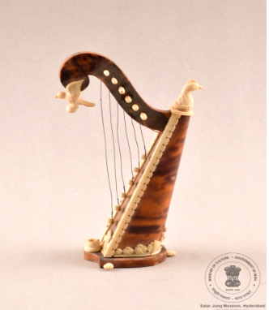

🔇 Is bhasha me is vastu ka audio abhi uplabdh nahi hai.
6. CS - IV - 346: लघु वीणा (मिनीएचर हार्प)

6. CS - IV - 346
वीणा का यह लघु मॉडल छह तारों वाला है। इसके शरीर की किनारियाँ हाथीदाँत (आइवरी) से बनी हैं। सामने की छड़ी (रॉड) के शीर्ष पर हाथीदाँत का बना एक पक्षी है, और पीछे की ओर एक नक्काशीदार हाथीदाँत का पक्षी-मुख (बर्ड्स हेड) बना हुआ है। शरीर को गेरू (ओचर) और जली सियाना (बर्न्ट सिएना) रंग की मोल्डेड प्लास्टिक शीट से ढका गया है। ध्वनि उत्पन्न करने वाला भाग इसके तार हैं, जो नायलॉन, स्टील या कभी-कभी पशु की आँत (गट) से बने होते हैं। संगीतकार इन तारों को अपनी उंगलियों से झंकारते हैं, और कभी-कभी वे धनुष (बो) को उल्टा पकड़कर उसकी लकड़ी की हैंडल से तारों को बजाते हैं। तारों को सामान्यतः धनुष से रगड़कर बजाया जाता है। यह लघु वीणा हाथीदाँत और लकड़ी से बनी है। यह यूरोप से संबंधित है और 20वीं शताब्दी की है।
6. CS - IV - 346: Miniature Harp
6. CS - IV - 346
This miniature model of a harp has six strings. The edges of its body are made of ivory. At the top of the front rod is a bird made of ivory, and at the back is a carved ivory bird's head. The body is covered with moulded plastic sheet in ochre and burnt sienna. The sound-producing part is its strings, made of nylon, steel or sometimes animal gut. The musician plucks these strings with the fingers, and sometimes holds the bow upside down and plays the strings with its wooden handle. The strings are ordinarily sounded by drawing the bow across them. This miniature harp is made of ivory and wood. It belongs to Europe and dates to the 20th century.
6. CS - IV - 346: చిన్న వీణ (మినియేచర్ హార్ప్)
6. CS - IV - 346
వీణ యొక్క ఈ చిన్న నమూనాకు ఆరు తీగలు ఉన్నాయి. దీని శరీర అంచులు ఏనుగు దంతంతో చేయబడ్డాయి. ముందు కడ్డీ శిఖరంపై ఏనుగు దంతంతో చేసిన పక్షి ఉంది, వెనుక వైపు చెక్కిన ఏనుగు దంతపు పక్షి తల ఉంది. శరీరాన్ని ఓచర్ మరియు బర్న్ట్ సియన్నా రంగుల మౌల్డెడ్ ప్లాస్టిక్ షీట్తో కప్పారు. ధ్వని ఉత్పత్తి చేసే భాగం దాని తీగలు, అవి నైలాన్, ఉక్కు లేదా కొన్నిసార్లు జంతువుల పేగుతో తయారవుతాయి. సంగీతకారుడు ఈ తీగలను వేళ్లతో మీటుతాడు, కొన్నిసార్లు విల్లును తలకిందులుగా పట్టుకుని దాని కలప పిడితో తీగలను వాయిస్తాడు. తీగలను సాధారణంగా విల్లుతో రాపిడి చేసి వాయిస్తారు. ఈ చిన్న వీణ ఏనుగు దంతం మరియు కలపతో తయారైనది. ఇది ఐరోపాకు చెందినది, 20వ శతాబ్దానికి చెందినది.
6. سی ایس-IV-346: میناتورہارپ
6. سی ایس-IV-346
یہ ایک کھڑی ہوئی جاپانی خاتونمایکوکا مجسمہ ہے جو دونوں ہاتھوں میں چھتری تھامے ہوئی ہے۔ اس کے سینے پر گلابی رنگ کے موتیوں کی مالا ہے جو بیلٹ کی مانند دکھائی دیتی ہے۔ مایکو نے پھولوں کے نقش و نگار والا لباس پہنا ہوا ہے اور سر پر پھول لٹک رہے ہیں۔مائیکو دراصل کیوٹو میں گیشا بننے والی طالبہ لڑکیوں کو کہا جاتا ہے۔ انہیں جاپانی رقص سیکھنا ضروری ہوتا ہے، اسی وجہ سے انہیں مایکو کہا جاتا ہے۔مائی کا مطلب رقص اور کو کا مطلب لڑکی ہے۔گیوشا کے گڑیا نما مجسمے جاپان کی خوبصورت خواتین کی نمائندگی کرتے ہیں، جو رقص گائیکیگفتگو اور دیگر صلاحیتوں کے ذریعے تفریح فراہم کرتی ہیں۔ ہر جاپانی گیوشا گڑیا کا لباس ریشم سے نہایت باریک کاریگری کے ساتھ تیار کیا جاتا ہے اور یہ حقیقی جاپانی گیوشا کے کیمونو جیسا دکھائی دیتا ہے۔تمام جاپانی گیوشا گڑیا سیاہ لکڑی کے چبوترے پر نصب کیے گئے ہیں تاکہ اعلیٰ معیار کی خوبصورتی سامنے آئے۔یہ گڑیا جاپانی حکومت کی جانب سے سالار جنگ میوزیم کو مارچ 1966 میں تحفے میں دیے گئے تھے۔
2. سی ایس-I-303: چوہا پرسوار گنیش جی
یہ بھگوان گنیش کا چینی مٹی سے تیار کیا گیا مجسمہ ہے، جو چار ہاتھوں والا ہے ۔ اس کا اوپری لباس سرخ رنگ کا ہے۔یہ مجسمہ ہندوستان میں تیار کیا گیا اور بیسویں صدی سے تعلق رکھتا ہے۔گنیشجی کو عام طور پر چوہے پر سوار دکھایا جاتا ہے، جو ان کی سواری ہے۔ چوہابےچینذہن خواہشات اور پیچیدہ حالات میں قابو پانے کی صلاحیت کی علامت ہے۔ گنیش جی کا چوہے پر سوار ہونا یہ ظاہر کرتا ہے کہ وہ منفی توانائی کو مثبت میں تبدیل کرنے کی صلاحیت رکھتے ہیں۔گنیشجی ہندو مذہب میں ہاتھی سر والے دیوتا ہیں۔ وہ بھگوان شیو اور دیوی پاروتی کے بیٹے ہیں۔گنیش جیہندو مذہب کے نہایت مقبول اور کثرت سے پوجے جانے والے دیوتاؤں میں شمار ہوتے ہیں۔ ہندو روایت کے مطابق گنیش کو دانائی دولت کامیابی اور خوش بختی کا دیوتا مانا جاتا ہے۔
3. سی ایس-I-305: پدمسمبھوا
یہ تاج پہنی ہوئی دیوی پدمسمبھوا کا رنگین چینی مٹی سے بنا ہوا مجسمہ ہے، جو کمل کے پھول پر بیٹھی ہوئی ہیں اور ان کے دس بازو ہیں۔ یہ پیکر ڈھال کر تیار کیا گیا ہے جس میں دس ہاتھ مختلف علامتی اشیا تھامے ہوئے دکھائے گئے ہیں۔ انہوں نے شوخ رنگوں کے آرام دہ اور دلکش لباس زیب تن کی ہوئی ہیں، اور یہ مجسمہ لہروں کے اوپر بنائے گئے کمل نما چبوترے پر نصب ہے۔ یہ بدھ مت کے تانترک مکتبفکر کی ایک نمایاں اور باوقار شخصیت سمجھی جاتی ہیں، جو اپنی روحانی مہارت اور تانترک عبادات و رسوم کے باعث شہرت رکھتے ہیں۔ تبتی بدھ مت میں انہیں نہایت عقیدت کے ساتھ یاد کیا جاتا ہے اور اکثر تبت میں بدھ مت کی بنیاد رکھنے والی عظیم شخصیات میں شمار کی جاتی ہیں ۔ کہا جاتا ہے کہ یہ کمل کے پھول سے پیدا ہوئی، جو بدھ مت کے فن و ادب میں ایک معروف اور مقدس علامت ہے۔ تبت کی ثقافت میں ان کی حیثیت مرکزی ہے اور انہیں مجسموں مصوری اور فنون لطیفہ کی دیگر صورتوں میں کثرت سے پیش کیا جاتا ہے
4سی ایس-I-812: بونا کا مجسمہ
یہ مجسمہ سات بونوں میں سے ایک کردار ڈاک کا ہے جو درخت کے تنے پر بیٹھا ہوا ہے۔ اس کا بایاں ہاتھ کمر پر ہے۔ اس نے سبز رنگ کی ٹوپیسفید قمیص اور سیاہ جوتے پہن رکھے ہیں۔ کمر پر سیاہ بیلٹ ہے ۔ سات بونے ڈزنی کی مشہور متحرک فلم “اسنو وائٹ اینڈ دی سیون ڈوارفس” کے کردار ہیں۔ ان کے نام یہ ہیں ڈاک گرَمپیبےشفول ، سلیپی، اسنیزی، ہیپی اور ڈوپی ۔ ہر ایک کی شخصیت منفرد ہے۔ یہ سب ایک چھوٹے سے کاٹیج میں رہتے ہیں اور ہیروں کی کان میں کام کرتے ہیں۔ وہ اپنی مہربانی اور اسنو وائٹ کو اپنے گھر میں خوش آمدید کہنے کے لیے جانے جاتے ہیں۔ ڈاک اس گروہ کا رہنما ہے اور ذہین و دانا سمجھا جاتا ہے۔ گرَمپی سب سے زیادہ چڑچڑا ہے۔ بیشفل نہایت شرمیلا اور قدرے رومانوی مزاج رکھتا ہے۔ سلیپی ہمیشہ تھکا ہوا محسوس ہوتا ہے۔ سنیزی کا نام اس کی عادت کی طرف اشارہ کرتا ہے۔ ہیپی سب سے زیادہ خوش مزاج اور ہنس مکھ ہے۔ ڈوپی سب سے کم عمر بھولا بھالا گونگا اور بغیر داڑھی کے دکھایا جاتا ہے۔ یہ مجسمہ جرمنی سے تعلق رکھتا ہے اور بیسویں صدی کا ہے۔
5. سی ایس-II-656: کشتی
سنہری ملمع کاری سے مزین جنگی جہاز کا ایک چھوٹا ماڈل، جس میں تین ستون دو سپاہی پانچ توپیں اور چار رڈر موجود ہیں۔ دوسری جانب تین نقاب نما شکلیں بنی ہوئی ہیں۔ ایک سرے پر جھنڈےاور علامتی پرچم نصب ہیں، جبکہ چار تمغہ نما دائروں میں چینی تحریر ہیں۔ یہ جہاز خوب صورت نقش و نگار سے آراستہ لکڑی کے تراشیدہ چبوترے پر نصب ہے۔ اس طرز کے جنگی جہاز چینی روایتی بادبانی کشتیوں کی ایک قسم سے تعلق رکھتے ہیں۔ ان کی نمایاں خصوصیات میں ہموار اور چپٹی تہہ درمیانی مرکزی رڈر اور عموماً سیدھا پچھلا حصہ شامل ہے۔ یہ جہاز عموماً سامان کی نقل و حمل تفریحی سفر اور دریاؤں یا ساحلی علاقوں میں رہائشی کشتیوں کے طور پر بھی استعمال ہوتے رہے ہیں۔ انہیں خاص طور پر دریائی سفر بین الاقوامی تجارت سمندری مہمات اور یہاں تک کہ بحری جنگوں کے لیے بھی تیار کیا جاتا تھا۔ آج بھی ایشیا کے مختلف علاقوں میں اس طرز کی کشتیاں ماہی گیری تجارت اور سیاحت کے لیے استعمال کی جاتی ہیں۔ یہ مختصر جنگی جہاز چاندی سے تیار کیا گیا ہے۔ یہ چینی طرز کا ماڈل جنگی جہاز بیسویں صدی سے تعلق رکھتا ہے۔
6. سی ایس-IV-346: مختصر ساز
یہ ساز کا ایک مختصر نمونہ ہے جس میں چھ تاریں لگی ہوئی ہیں۔ ساز کیباڈی کے کناروں پر ہاتھی دانت کی تزئین کی گئی ہے ، اور سامنے کی چھڑی کے اوپر ہاتھی دانت کا پرندہ نصب ہے جبکہ پیچھے پر ہاتھی دانت سے تراشا گیا پرندے کا سر موجود ہے۔سازکیباڈیگہرے زرد مائل اور سرخی مائل بھورے رنگ کے مڑھے ہوئے پلاسٹک شیٹ سے ڈھکا ہوا ہے۔ یہ آلہ صوتی تاروں سے آواز پیدا کرتا ہے، جو عموماً نائلوناسٹیل یا کبھی کبھار آنتوں کے بنے ہوتے ہیں۔ عموماً تاروں کو انگلیوں سے چھیڑ کر بجایا جاتا ہے، جبکہ بعض اوقات کمان کے ذریعے بھی ان پر حرکت دی جاتی ہے۔ موسیقار اپنی مہارت کے مطابق مختلف انداز اختیار کرتے ہیں۔ یہ مختصر ساز ہاتھی دانت اور لکڑی سے تیار کیا گیا ہے۔ اس کا تعلق یورپ سے ہے اور یہ بیسویں صدی کا ہے۔
7. سی ایس-IV-531: عدالتی منظر
یہ لکڑی پر تراشا گیا ایک عدالت کا منظر ہے۔ ایک افسر کرسی پر بیٹھا ہے اور اس کے سامنے میز رکھی ہے۔ اس کے دونوں جانب ایک ایک ماتحت موجود ہے، جبکہ چار محافظ پہرہ دے رہے ہیں۔ افسر کے سامنے دو ملزمان کھڑے ہیں؛ ایک کے گردن میں لکڑی کا طوق ڈالا گیا ہے اور دوسرے کے دونوں ہاتھوں میں لکڑی کی بیڑیاں ہیں۔ اس کی ابتدا چین سے ہوئی اور یہ بیسویں صدی سے تعلق رکھتا ہے۔ لکڑی پر کی گئی نقش و نگاری کا ایک مجموعہ چینی مذہبی عقائد کی عکاسی کرتا ہے۔ ہندوستانی عقیدے کے مطابق بھی جو لوگ انسانوں اور جانوروں کے ساتھ نیکی کرتے ہیں، انہیں مرنے کے بعد جنت نصیب ہوتی ہے، اور جو برے اعمال کرتے ہیں انہیں جہنم میں سزا دی جاتی ہے۔ مجرموں کو ان کے مختلف گناہوں کے مطابق جہنم میں طرح طرح کی سزائیں بھگتتے ہوئے دکھایا گیا ہے۔
2. سی ایس-I-303: چوہا پرسوار گنیش جی
یہ بھگوان گنیش کا چینی مٹی سے تیار کیا گیا مجسمہ ہے، جو چار ہاتھوں والا ہے ۔ اس کا اوپری لباس سرخ رنگ کا ہے۔یہ مجسمہ ہندوستان میں تیار کیا گیا اور بیسویں صدی سے تعلق رکھتا ہے۔گنیشجی کو عام طور پر چوہے پر سوار دکھایا جاتا ہے، جو ان کی سواری ہے۔ چوہابےچینذہن خواہشات اور پیچیدہ حالات میں قابو پانے کی صلاحیت کی علامت ہے۔ گنیش جی کا چوہے پر سوار ہونا یہ ظاہر کرتا ہے کہ وہ منفی توانائی کو مثبت میں تبدیل کرنے کی صلاحیت رکھتے ہیں۔گنیشجی ہندو مذہب میں ہاتھی سر والے دیوتا ہیں۔ وہ بھگوان شیو اور دیوی پاروتی کے بیٹے ہیں۔گنیش جیہندو مذہب کے نہایت مقبول اور کثرت سے پوجے جانے والے دیوتاؤں میں شمار ہوتے ہیں۔ ہندو روایت کے مطابق گنیش کو دانائی دولت کامیابی اور خوش بختی کا دیوتا مانا جاتا ہے۔
3. سی ایس-I-305: پدمسمبھوا
یہ تاج پہنی ہوئی دیوی پدمسمبھوا کا رنگین چینی مٹی سے بنا ہوا مجسمہ ہے، جو کمل کے پھول پر بیٹھی ہوئی ہیں اور ان کے دس بازو ہیں۔ یہ پیکر ڈھال کر تیار کیا گیا ہے جس میں دس ہاتھ مختلف علامتی اشیا تھامے ہوئے دکھائے گئے ہیں۔ انہوں نے شوخ رنگوں کے آرام دہ اور دلکش لباس زیب تن کی ہوئی ہیں، اور یہ مجسمہ لہروں کے اوپر بنائے گئے کمل نما چبوترے پر نصب ہے۔ یہ بدھ مت کے تانترک مکتبفکر کی ایک نمایاں اور باوقار شخصیت سمجھی جاتی ہیں، جو اپنی روحانی مہارت اور تانترک عبادات و رسوم کے باعث شہرت رکھتے ہیں۔ تبتی بدھ مت میں انہیں نہایت عقیدت کے ساتھ یاد کیا جاتا ہے اور اکثر تبت میں بدھ مت کی بنیاد رکھنے والی عظیم شخصیات میں شمار کی جاتی ہیں ۔ کہا جاتا ہے کہ یہ کمل کے پھول سے پیدا ہوئی، جو بدھ مت کے فن و ادب میں ایک معروف اور مقدس علامت ہے۔ تبت کی ثقافت میں ان کی حیثیت مرکزی ہے اور انہیں مجسموں مصوری اور فنون لطیفہ کی دیگر صورتوں میں کثرت سے پیش کیا جاتا ہے
4سی ایس-I-812: بونا کا مجسمہ
یہ مجسمہ سات بونوں میں سے ایک کردار ڈاک کا ہے جو درخت کے تنے پر بیٹھا ہوا ہے۔ اس کا بایاں ہاتھ کمر پر ہے۔ اس نے سبز رنگ کی ٹوپیسفید قمیص اور سیاہ جوتے پہن رکھے ہیں۔ کمر پر سیاہ بیلٹ ہے ۔ سات بونے ڈزنی کی مشہور متحرک فلم “اسنو وائٹ اینڈ دی سیون ڈوارفس” کے کردار ہیں۔ ان کے نام یہ ہیں ڈاک گرَمپیبےشفول ، سلیپی، اسنیزی، ہیپی اور ڈوپی ۔ ہر ایک کی شخصیت منفرد ہے۔ یہ سب ایک چھوٹے سے کاٹیج میں رہتے ہیں اور ہیروں کی کان میں کام کرتے ہیں۔ وہ اپنی مہربانی اور اسنو وائٹ کو اپنے گھر میں خوش آمدید کہنے کے لیے جانے جاتے ہیں۔ ڈاک اس گروہ کا رہنما ہے اور ذہین و دانا سمجھا جاتا ہے۔ گرَمپی سب سے زیادہ چڑچڑا ہے۔ بیشفل نہایت شرمیلا اور قدرے رومانوی مزاج رکھتا ہے۔ سلیپی ہمیشہ تھکا ہوا محسوس ہوتا ہے۔ سنیزی کا نام اس کی عادت کی طرف اشارہ کرتا ہے۔ ہیپی سب سے زیادہ خوش مزاج اور ہنس مکھ ہے۔ ڈوپی سب سے کم عمر بھولا بھالا گونگا اور بغیر داڑھی کے دکھایا جاتا ہے۔ یہ مجسمہ جرمنی سے تعلق رکھتا ہے اور بیسویں صدی کا ہے۔
5. سی ایس-II-656: کشتی
سنہری ملمع کاری سے مزین جنگی جہاز کا ایک چھوٹا ماڈل، جس میں تین ستون دو سپاہی پانچ توپیں اور چار رڈر موجود ہیں۔ دوسری جانب تین نقاب نما شکلیں بنی ہوئی ہیں۔ ایک سرے پر جھنڈےاور علامتی پرچم نصب ہیں، جبکہ چار تمغہ نما دائروں میں چینی تحریر ہیں۔ یہ جہاز خوب صورت نقش و نگار سے آراستہ لکڑی کے تراشیدہ چبوترے پر نصب ہے۔ اس طرز کے جنگی جہاز چینی روایتی بادبانی کشتیوں کی ایک قسم سے تعلق رکھتے ہیں۔ ان کی نمایاں خصوصیات میں ہموار اور چپٹی تہہ درمیانی مرکزی رڈر اور عموماً سیدھا پچھلا حصہ شامل ہے۔ یہ جہاز عموماً سامان کی نقل و حمل تفریحی سفر اور دریاؤں یا ساحلی علاقوں میں رہائشی کشتیوں کے طور پر بھی استعمال ہوتے رہے ہیں۔ انہیں خاص طور پر دریائی سفر بین الاقوامی تجارت سمندری مہمات اور یہاں تک کہ بحری جنگوں کے لیے بھی تیار کیا جاتا تھا۔ آج بھی ایشیا کے مختلف علاقوں میں اس طرز کی کشتیاں ماہی گیری تجارت اور سیاحت کے لیے استعمال کی جاتی ہیں۔ یہ مختصر جنگی جہاز چاندی سے تیار کیا گیا ہے۔ یہ چینی طرز کا ماڈل جنگی جہاز بیسویں صدی سے تعلق رکھتا ہے۔
6. سی ایس-IV-346: مختصر ساز
یہ ساز کا ایک مختصر نمونہ ہے جس میں چھ تاریں لگی ہوئی ہیں۔ ساز کیباڈی کے کناروں پر ہاتھی دانت کی تزئین کی گئی ہے ، اور سامنے کی چھڑی کے اوپر ہاتھی دانت کا پرندہ نصب ہے جبکہ پیچھے پر ہاتھی دانت سے تراشا گیا پرندے کا سر موجود ہے۔سازکیباڈیگہرے زرد مائل اور سرخی مائل بھورے رنگ کے مڑھے ہوئے پلاسٹک شیٹ سے ڈھکا ہوا ہے۔ یہ آلہ صوتی تاروں سے آواز پیدا کرتا ہے، جو عموماً نائلوناسٹیل یا کبھی کبھار آنتوں کے بنے ہوتے ہیں۔ عموماً تاروں کو انگلیوں سے چھیڑ کر بجایا جاتا ہے، جبکہ بعض اوقات کمان کے ذریعے بھی ان پر حرکت دی جاتی ہے۔ موسیقار اپنی مہارت کے مطابق مختلف انداز اختیار کرتے ہیں۔ یہ مختصر ساز ہاتھی دانت اور لکڑی سے تیار کیا گیا ہے۔ اس کا تعلق یورپ سے ہے اور یہ بیسویں صدی کا ہے۔
7. سی ایس-IV-531: عدالتی منظر
یہ لکڑی پر تراشا گیا ایک عدالت کا منظر ہے۔ ایک افسر کرسی پر بیٹھا ہے اور اس کے سامنے میز رکھی ہے۔ اس کے دونوں جانب ایک ایک ماتحت موجود ہے، جبکہ چار محافظ پہرہ دے رہے ہیں۔ افسر کے سامنے دو ملزمان کھڑے ہیں؛ ایک کے گردن میں لکڑی کا طوق ڈالا گیا ہے اور دوسرے کے دونوں ہاتھوں میں لکڑی کی بیڑیاں ہیں۔ اس کی ابتدا چین سے ہوئی اور یہ بیسویں صدی سے تعلق رکھتا ہے۔ لکڑی پر کی گئی نقش و نگاری کا ایک مجموعہ چینی مذہبی عقائد کی عکاسی کرتا ہے۔ ہندوستانی عقیدے کے مطابق بھی جو لوگ انسانوں اور جانوروں کے ساتھ نیکی کرتے ہیں، انہیں مرنے کے بعد جنت نصیب ہوتی ہے، اور جو برے اعمال کرتے ہیں انہیں جہنم میں سزا دی جاتی ہے۔ مجرموں کو ان کے مختلف گناہوں کے مطابق جہنم میں طرح طرح کی سزائیں بھگتتے ہوئے دکھایا گیا ہے۔
6. CS - IV - 346: ক্ষুদ্রাকৃতি হার্প
6. CS - IV - 346
ছয়টি তারবিশিষ্ট একটি হার্প বা তারবাদ্যের ক্ষুদ্রাকৃতি মডেল। এর মূল কাঠামোর ধারগুলি হাতির দাঁত দিয়ে তৈরি। সামনের দণ্ডের ওপর হাতির দাঁতের তৈরি একটি পাখি এবং পেছনের দিকে একটি পাখির মাথা খোদাই করা রয়েছে। বাদ্যযন্ত্রটির মূল অংশ গেরুয়া এবং খয়েরিরঙের ছাঁচে ঢালা প্লাস্টিক শিট দিয়ে আবৃত। এই যন্ত্রটিতে সুর তৈরি হয় তারের মাধ্যমে, যা সাধারণত নাইলন, ইস্পাত বা প্রাণীর অন্ত্রদিয়ে তৈরি হয়। অধিকাংশ সময় ছড়টেনে এই তারগুলি বাজানো হয়। তবে শিল্পীরা আঙুল দিয়ে তার টেনেও এটি বাজিয়ে থাকেন। কখনো কখনও তাঁরা ছড়টিকে উল্টো করে ধরে সেটির কাঠের হাতল দিয়েও তারের ওপর আঘাত করে থাকেন; যে হাতলটির পেছন দিকটি পাখির মাথার আদলে খোদাই করা। তবে বেশিরভাগ সময় তারের ওপর ছড় টেনে এটি বাজানো হয়। হাতির দাঁত ও কাঠ দিয়ে তৈরি এই ক্ষুদ্রাকৃতি হার্পটি মূলত ২০শ শতাব্দীর এবং এটি ইউরোপীয় ঐতিহ্যের সাথে যুক্ত।
7. CS - IV- 531: রাজসভার দৃশ্য
কাঠের ওপর খোদাই করা একটি রাজসভার দৃশ্য। এখানে একজন বিচারক সামনে টেবিল নিয়ে একটি চেয়ারে বসে আছেন; তাঁর দুই পাশে দুইজন অধস্তন কর্মী এবং চারজন প্রহরী দাঁড়িয়ে রয়েছেন। বিচারকের সামনে দুইজন অভিযুক্ত ব্যক্তি উপস্থিত, যাদের মধ্যে একজনের ঘাড় কাঠের ব্লকে আটকানো এবং অন্যজনের দুই হাত কাঠের শিকল বা ব্লকে বাঁধা। ২০শ শতাব্দীতে চীনে তৈরি এই কাঠের খোদাই করা শিল্পকর্মটি মূলত চীনাদের ধর্মীয় বিশ্বাসকে ফুটিয়ে তোলে। ভারতীয়দের মতোই তারাও বিশ্বাস করে যে, যারা পশু বা মানুষের প্রতি দয়া প্রদর্শন করে, তারা মৃত্যুর পর স্বর্গে স্থান পায় এবং যারা কুকর্ম করে তারা নরকে শাস্তি ভোগ করে। এখানে নরকের সেই অপরাধীদের তাদের বিবিধ পাপের জন্য বিভিন্ন ধরণের শাস্তি পাওয়ার দৃশ্য চিত্রিত করা হয়েছে।
7. CS - IV- 531: রাজসভার দৃশ্য
কাঠের ওপর খোদাই করা একটি রাজসভার দৃশ্য। এখানে একজন বিচারক সামনে টেবিল নিয়ে একটি চেয়ারে বসে আছেন; তাঁর দুই পাশে দুইজন অধস্তন কর্মী এবং চারজন প্রহরী দাঁড়িয়ে রয়েছেন। বিচারকের সামনে দুইজন অভিযুক্ত ব্যক্তি উপস্থিত, যাদের মধ্যে একজনের ঘাড় কাঠের ব্লকে আটকানো এবং অন্যজনের দুই হাত কাঠের শিকল বা ব্লকে বাঁধা। ২০শ শতাব্দীতে চীনে তৈরি এই কাঠের খোদাই করা শিল্পকর্মটি মূলত চীনাদের ধর্মীয় বিশ্বাসকে ফুটিয়ে তোলে। ভারতীয়দের মতোই তারাও বিশ্বাস করে যে, যারা পশু বা মানুষের প্রতি দয়া প্রদর্শন করে, তারা মৃত্যুর পর স্বর্গে স্থান পায় এবং যারা কুকর্ম করে তারা নরকে শাস্তি ভোগ করে। এখানে নরকের সেই অপরাধীদের তাদের বিবিধ পাপের জন্য বিভিন্ন ধরণের শাস্তি পাওয়ার দৃশ্য চিত্রিত করা হয়েছে।
6. CS-IV-346: મિનિએચર વીણા
6. CS-IV-346
ઉભેલી જાપાની સ્ત્રી “માઇકો”ની પ્રતિમા, જેણે બંને હાથમાં છત્રી પકડી રાખી છે. છાતી પર ગુલાબી રંગની મણિયાની પટ્ટી (બેલ્ટ) જેવી શોભા છે. ફૂલોના આકારવાળું વસ્ત્ર પરિધાન કર્યા છે અને માથેથી લટકતા ફૂલોની સજાવટ છે. “માઇકો”નો અર્થ ક્યોટોમાં શિક્ષાર્થી ગેશા યુવતી થાય છે. તેમને જાપાની નૃત્યો શીખવા ફરજિયાત હોય છે, તેથી તેમને “માઇકો” કહેવામાં આવે છે — કારણ કે “માઇ” એટલે નૃત્ય અને “કો” એટલે છોકરી. ગેશા ગુડિયા એવી આકર્ષક જાપાની સ્ત્રીઓનું પ્રતિનિધિત્વ કરે છે જે નૃત્ય, ગીત, સંવાદ અને અન્ય પ્રતિભા દ્વારા મનોરંજન આપે છે. દરેક જાપાની ગેશા ગુડિયાનું વસ્ત્ર રેશમથી સુંદર રીતે બનાવવામાં આવ્યું છે અને તે ખરેખર જાપાની ગેશાઓ દ્વારા પહેરાતી અસલી કિમોનો જેવી લાગે છે. અમારી (અહીની) તમામ જાપાની ગેશા ગુડિયાઓને ઊંચી ગુણવત્તા આપવા માટે કાળા લાકડાના તખ્તા પર ઉભી રાખવામાં આવી છે. આ ગુડિયાઓ જાપાન સરકારે માર્ચ 1966માં સલાર જંગ સંગ્રહાલયને ભેટ તરીકે આપી હતી.
2.CS-I-303: ગણેશ ઓન મુશિકા
પોર્સેલિનથી બનેલી ભગવાન ગણેશની પ્રતિમા, જેઓ ચાર હાથ ધરાવે છે અને ઉંદર પર આરુઢ છે. તેમના ઉપરના વસ્ત્રનો રંગ લાલ છે. આ પ્રતિમા ભારતમાંથી ઉત્પન્ન થઈ છે અને તેનું સમયકાળ 20મી સદીનો છે. ભગવાન ગણેશને પ્રસિદ્ધ રીતે તેમના વાહન ઉંદર (મૂષક) પર આરુઢ દર્શાવવામાં આવે છે. ઉંદર અશાંત મન, ઇચ્છાઓ અને જટિલ માર્ગોમાંથી પસાર થવાની ક્ષમતા દર્શાવે છે. ભગવાન ગણેશના વાહન તરીકે ઉંદર કેમ છે, તેની પાછળ એક કથા છે. ગણેશજી પાસે નકારાત્મકતાને સકારાત્મકતામાં પરિવર્તિત કરવાની શક્તિ છે, તેથી તેમણે મૂષક પર આરુઢ થવાનું પસંદ કર્યું. ગણેશજી હિંદુ ધર્મમાં હાથીમુખવાળા દેવતા છે. તેઓ ભગવાન શિવ અને દેવી પાર્વતીના પુત્ર છે. ગણેશજી હિંદુ ધર્મમાં અત્યંત લોકપ્રિય અને સૌથી વધુ પૂજાતા દેવતાઓમાંના એક છે. હિંદુ પરંપરા મુજબ ગણેશજી જ્ઞાન, સંપત્તિ, સફળતા અને શુભલાભના દેવતા તરીકે માનવામાં આવે છે.
3. CS-I-305: પદ્મસંભવ
રંગીન પોર્સેલિનથી બનેલી તાજધારી દેવી પદ્મસમ્ભવની પ્રતિમા, જે દસ હાથ ધરાવે છે અને કમળ પર બેઠેલી છે. આ દાવવાદી પ્રતિમા દસ હાથ સાથે આકારિત છે, જેમાં દરેક હાથમાં અલગ-અલગ ચિન્હો છે. તેજસ્વી રંગોના ઢીલા વસ્ત્રો પહેરેલા છે અને સમુદ્રની લહેરો ઉપર ઊભેલા કમળના આકારના પાટિયા પર સ્થિત છે. પદ્મસમ્ભવ તાંત્રિક બૌદ્ધ ધર્મના એક મહત્વપૂર્ણ વ્યક્તિત્વ છે, જે તેમના તાંત્રિક સાધનો અને ક્રિયાઓના કુશળ ઉપયોગ માટે જાણીતા છે. તેઓ તિબેટી બૌદ્ધ ધર્મમાં અતિ શ્રદ્ધાપાત્ર છે અને તિબેટમાં બૌદ્ધ ધર્મના સ્થાપક પુરુષોમાંના એક માનવામાં આવે છે. પદ્મસમ્ભવે તિબેટમાં બૌદ્ધ ધર્મની સ્થાપના અને મજબૂતિકરણમાં અગત્યની ભૂમિકા ભજવી હતી. કહેવામાં આવે છે કે તેઓ કમળના ફૂલમાંથી જન્મેલા હતા, જે બૌદ્ધ કલા અને સાહિત્યમાં સામાન્ય પ્રતીક છે. પદ્મસમ્ભવ તિબેટી સંસ્કૃતિના કેન્દ્રીય વ્યક્તિત્વ છે અને તેમની પ્રતિમાઓ, ચિત્રો અને અન્ય કલારૂપોમાં સમગ્ર તિબેટમાં દર્શાવવામાં આવે છે. આ પ્રતિમા જાપાનમાં ઉત્પન્ન થયેલી છે અને તેનું સમયકાળ 19મી સદીનો છે.
4. CS-I-812: ઠીંગણાની આકૃતિ
અહીં “ડોક” નામનો આકાર છે, જે સાત ઠીંગણાઓમાંનો એક છે, ઝાડના ખૂંટ પર બેઠેલો છે. તેની ડાબો હાથ કમર પર છે, તેણે લીલા રંગની ટોપી, સફેદ શર્ટ અને કાળા જૂતાં પહેર્યા છે. આ આકાર કાળા પટ્ટા અને પીળી બકલ સાથે સજ્જ છે. સાત બોના “સ્નો વ્હાઈટ એન્ડ ધ સેવન ડ્વાર્ફ્સ” નામની ડિઝ્નીની એનિમેટેડ ફિલ્મના પાત્રોનો એક જૂથ છે. તેઓ છે – ડોક, ગ્રમ્પી, બેશફુલ, સ્લીપી, સ્નીઝી, હેપ્પી અને ડોપી – દરેકની પોતાની અલગ વ્યક્તિગતતા છે. તેઓ જંગલની વચ્ચે એક નાનકડા કોટેજમાં રહે છે અને હીરાની ખાણમાં કામ કરે છે. તેઓ તેમની દયાળુ સ્વભાવ અને સ્નો વ્હાઈટને પોતાના ઘરે સ્વાગત કરવા માટે જાણીતા છે. ડોક આ જૂથનો નેતા છે – બુદ્ધિશાળી અને સમજદાર. ગ્રમ્પી સૌથી વધુ ચીડિયાળો બોન છે. બેશફુલ સૌથી શરમાળ અને રોમેન્ટિક છે. સ્લીપી હંમેશાં થાકેલો અને ઊંઘેલો રહે છે. સ્નીઝી એ એકમાત્ર બોન છે જેનું નામ તેના સ્વભાવને નહીં, પણ એક આરોગ્યસ્થિતિને દર્શાવે છે. હેપ્પી સૌથી આનંદી અને ખુશમિજાજ બોન છે. ડોપી સૌથી નાનો અને અણઘડ ઠીંગણો છે, બોલતો નથી અને દાઢી વિનાનો છે. આ આકાર જર્મનીમાં બનાવાયેલો છે અને તેનો સમયકાળ 20મી સદીનો છે.
5. CS-II-656: હોડી
સોનાની પરત ચડાવેલ યુદ્ધનૌકાનું સૂક્ષ્મ મોડેલ, જેમાં ત્રણ મસ્ત, બે સૈનિક, પાંચ તોપો, ચાર રૂડર અને બીજી બાજુ ત્રણ માસ્ક છે. એક છેડે ધ્વજ અને ચિહ્નો સાથે ચાર વર્તુળોમાં ચીની લખાણ છે. આ નૌકાને કોતરેલા લાકડાના આધાર પર મૂકવામાં આવી છે. આ યુદ્ધનૌકાઓ ચીનની પરંપરાગત વહાણોના એક પ્રકાર છે. તેમની વિશેષતા સમતળ તળિયાવાળો આકાર, મધ્યમાં એક રૂડર અને સામાન્ય રીતે સમતળ પાછળનો ભાગ (ટ્રાન્સમ) છે. આ નૌકાઓ સામાન્ય રીતે માલવાહક, મનોરંજન માટેની નૌકાવિહાર કે પછી નદીઓ અને દરિયાકાંઠા પર રહેઠાણ માટેની હાઉસબોટ તરીકે ઉપયોગમાં લેવાય છે. આ નૌકાઓ ખાસ કરીને નદીઓમાં નેવિગેશન, આંતરરાષ્ટ્રીય વેપારના અન્વેષણ અને સમુદ્રી યુદ્ધ માટે રચાયેલ છે. આજ સુધી એશિયાના વિવિધ ભાગોમાં માછીમારી, વેપાર અને પર્યટન માટે આવા જ પ્રકારની નૌકાઓનો ઉપયોગ થાય છે. આ સૂક્ષ્મ યુદ્ધનૌકા ચાંદીથી બનાવવામાં આવી છે. ચીની મોડલ યુદ્ધનૌકા 20મી સદીના સમયકાળની છે.
2.CS-I-303: ગણેશ ઓન મુશિકા
પોર્સેલિનથી બનેલી ભગવાન ગણેશની પ્રતિમા, જેઓ ચાર હાથ ધરાવે છે અને ઉંદર પર આરુઢ છે. તેમના ઉપરના વસ્ત્રનો રંગ લાલ છે. આ પ્રતિમા ભારતમાંથી ઉત્પન્ન થઈ છે અને તેનું સમયકાળ 20મી સદીનો છે. ભગવાન ગણેશને પ્રસિદ્ધ રીતે તેમના વાહન ઉંદર (મૂષક) પર આરુઢ દર્શાવવામાં આવે છે. ઉંદર અશાંત મન, ઇચ્છાઓ અને જટિલ માર્ગોમાંથી પસાર થવાની ક્ષમતા દર્શાવે છે. ભગવાન ગણેશના વાહન તરીકે ઉંદર કેમ છે, તેની પાછળ એક કથા છે. ગણેશજી પાસે નકારાત્મકતાને સકારાત્મકતામાં પરિવર્તિત કરવાની શક્તિ છે, તેથી તેમણે મૂષક પર આરુઢ થવાનું પસંદ કર્યું. ગણેશજી હિંદુ ધર્મમાં હાથીમુખવાળા દેવતા છે. તેઓ ભગવાન શિવ અને દેવી પાર્વતીના પુત્ર છે. ગણેશજી હિંદુ ધર્મમાં અત્યંત લોકપ્રિય અને સૌથી વધુ પૂજાતા દેવતાઓમાંના એક છે. હિંદુ પરંપરા મુજબ ગણેશજી જ્ઞાન, સંપત્તિ, સફળતા અને શુભલાભના દેવતા તરીકે માનવામાં આવે છે.
3. CS-I-305: પદ્મસંભવ
રંગીન પોર્સેલિનથી બનેલી તાજધારી દેવી પદ્મસમ્ભવની પ્રતિમા, જે દસ હાથ ધરાવે છે અને કમળ પર બેઠેલી છે. આ દાવવાદી પ્રતિમા દસ હાથ સાથે આકારિત છે, જેમાં દરેક હાથમાં અલગ-અલગ ચિન્હો છે. તેજસ્વી રંગોના ઢીલા વસ્ત્રો પહેરેલા છે અને સમુદ્રની લહેરો ઉપર ઊભેલા કમળના આકારના પાટિયા પર સ્થિત છે. પદ્મસમ્ભવ તાંત્રિક બૌદ્ધ ધર્મના એક મહત્વપૂર્ણ વ્યક્તિત્વ છે, જે તેમના તાંત્રિક સાધનો અને ક્રિયાઓના કુશળ ઉપયોગ માટે જાણીતા છે. તેઓ તિબેટી બૌદ્ધ ધર્મમાં અતિ શ્રદ્ધાપાત્ર છે અને તિબેટમાં બૌદ્ધ ધર્મના સ્થાપક પુરુષોમાંના એક માનવામાં આવે છે. પદ્મસમ્ભવે તિબેટમાં બૌદ્ધ ધર્મની સ્થાપના અને મજબૂતિકરણમાં અગત્યની ભૂમિકા ભજવી હતી. કહેવામાં આવે છે કે તેઓ કમળના ફૂલમાંથી જન્મેલા હતા, જે બૌદ્ધ કલા અને સાહિત્યમાં સામાન્ય પ્રતીક છે. પદ્મસમ્ભવ તિબેટી સંસ્કૃતિના કેન્દ્રીય વ્યક્તિત્વ છે અને તેમની પ્રતિમાઓ, ચિત્રો અને અન્ય કલારૂપોમાં સમગ્ર તિબેટમાં દર્શાવવામાં આવે છે. આ પ્રતિમા જાપાનમાં ઉત્પન્ન થયેલી છે અને તેનું સમયકાળ 19મી સદીનો છે.
4. CS-I-812: ઠીંગણાની આકૃતિ
અહીં “ડોક” નામનો આકાર છે, જે સાત ઠીંગણાઓમાંનો એક છે, ઝાડના ખૂંટ પર બેઠેલો છે. તેની ડાબો હાથ કમર પર છે, તેણે લીલા રંગની ટોપી, સફેદ શર્ટ અને કાળા જૂતાં પહેર્યા છે. આ આકાર કાળા પટ્ટા અને પીળી બકલ સાથે સજ્જ છે. સાત બોના “સ્નો વ્હાઈટ એન્ડ ધ સેવન ડ્વાર્ફ્સ” નામની ડિઝ્નીની એનિમેટેડ ફિલ્મના પાત્રોનો એક જૂથ છે. તેઓ છે – ડોક, ગ્રમ્પી, બેશફુલ, સ્લીપી, સ્નીઝી, હેપ્પી અને ડોપી – દરેકની પોતાની અલગ વ્યક્તિગતતા છે. તેઓ જંગલની વચ્ચે એક નાનકડા કોટેજમાં રહે છે અને હીરાની ખાણમાં કામ કરે છે. તેઓ તેમની દયાળુ સ્વભાવ અને સ્નો વ્હાઈટને પોતાના ઘરે સ્વાગત કરવા માટે જાણીતા છે. ડોક આ જૂથનો નેતા છે – બુદ્ધિશાળી અને સમજદાર. ગ્રમ્પી સૌથી વધુ ચીડિયાળો બોન છે. બેશફુલ સૌથી શરમાળ અને રોમેન્ટિક છે. સ્લીપી હંમેશાં થાકેલો અને ઊંઘેલો રહે છે. સ્નીઝી એ એકમાત્ર બોન છે જેનું નામ તેના સ્વભાવને નહીં, પણ એક આરોગ્યસ્થિતિને દર્શાવે છે. હેપ્પી સૌથી આનંદી અને ખુશમિજાજ બોન છે. ડોપી સૌથી નાનો અને અણઘડ ઠીંગણો છે, બોલતો નથી અને દાઢી વિનાનો છે. આ આકાર જર્મનીમાં બનાવાયેલો છે અને તેનો સમયકાળ 20મી સદીનો છે.
5. CS-II-656: હોડી
સોનાની પરત ચડાવેલ યુદ્ધનૌકાનું સૂક્ષ્મ મોડેલ, જેમાં ત્રણ મસ્ત, બે સૈનિક, પાંચ તોપો, ચાર રૂડર અને બીજી બાજુ ત્રણ માસ્ક છે. એક છેડે ધ્વજ અને ચિહ્નો સાથે ચાર વર્તુળોમાં ચીની લખાણ છે. આ નૌકાને કોતરેલા લાકડાના આધાર પર મૂકવામાં આવી છે. આ યુદ્ધનૌકાઓ ચીનની પરંપરાગત વહાણોના એક પ્રકાર છે. તેમની વિશેષતા સમતળ તળિયાવાળો આકાર, મધ્યમાં એક રૂડર અને સામાન્ય રીતે સમતળ પાછળનો ભાગ (ટ્રાન્સમ) છે. આ નૌકાઓ સામાન્ય રીતે માલવાહક, મનોરંજન માટેની નૌકાવિહાર કે પછી નદીઓ અને દરિયાકાંઠા પર રહેઠાણ માટેની હાઉસબોટ તરીકે ઉપયોગમાં લેવાય છે. આ નૌકાઓ ખાસ કરીને નદીઓમાં નેવિગેશન, આંતરરાષ્ટ્રીય વેપારના અન્વેષણ અને સમુદ્રી યુદ્ધ માટે રચાયેલ છે. આજ સુધી એશિયાના વિવિધ ભાગોમાં માછીમારી, વેપાર અને પર્યટન માટે આવા જ પ્રકારની નૌકાઓનો ઉપયોગ થાય છે. આ સૂક્ષ્મ યુદ્ધનૌકા ચાંદીથી બનાવવામાં આવી છે. ચીની મોડલ યુદ્ધનૌકા 20મી સદીના સમયકાળની છે.
6. CS-IV-346: ಮಿನಿಯೇಚರ್ ಹಾರ್ಪ್
6. CS-IV-346
ಎರಡೂ ಕೈಗಳಲ್ಲಿ ಛತ್ರಿಯನ್ನು ಹಿಡಿದು ನಿಂತಿರುವ ಜಪಾನೀಸ್ ಮಹಿಳೆ "ಮೈಕೊ" ರೂಪದ ಈ ಸುಂದರ ಶಿಲ್ಪ ಕಲಾಕೃತಿಯು, ಎದೆಯ ಮೇಲೆ ಗುಲಾಬಿ ಬಣ್ಣದ ಮಣಿಗಳ ಪಟ್ಟಿಯನ್ನು ಹೊಂದಿದೆ. ಆಕೆ ಹೂವಿನ ವಿನ್ಯಾಸವಿರುವ ಅತ್ಯಾಕರ್ಷಕ ಉಡುಪನ್ನು ಧರಿಸಿದ್ದಾಳೆ ಮತ್ತು ಆಕೆಯ ತಲೆಯಮೇಲಿನಿಂದ ಹೂವುಗಳು ನೇತಾಡುತ್ತಿವೆ. ಕ್ಯೋಟೋ ನಗರದಲ್ಲಿ 'ಗೀಶಾ' ಕಲೆಯ ತರಬೇತಿ ಪಡೆಯುತ್ತಿರುವ ಯುವತಿಯನ್ನು "ಮೈಕೊ" ಎಂದು ಕರೆಯಲಾಗುತ್ತದೆ. ಅವರು ಕಡ್ಡಾಯವಾಗಿ ಜಪಾನೀಸ್ ನೃತ್ಯಗಳನ್ನು ಕಲಿಯಬೇಕಾಗಿರುವುದರಿಂದ ಅವರನ್ನು 'ಮೈಕೊ' ಎಂದು ಕರೆಯಲಾಗುತ್ತದೆ; ಏಕೆಂದರೆ ಜಪಾನೀಸ್ ಭಾಷೆಯಲ್ಲಿ "ಮೈ" ಎಂದರೆ 'ನೃತ್ಯ' ಮತ್ತು "ಕೊ" ಎಂದರೆ 'ಹುಡುಗಿ' ಎಂದರ್ಥ. ಗೀಶಾ ಗೊಂಬೆಗಳು ಆಕರ್ಷಕ ಜಪಾನೀಸ್ ಮಹಿಳೆಯರ ಪ್ರತಿಕೃತಿಗಳಾಗಿದ್ದು, ನಿಜವಾದ ಗೀಶಾಗಳು ನೃತ್ಯ, ಹಾಡುಗಾರಿಕೆ, ಸಂಭಾಷಣೆ ಮತ್ತು ಇತರ ಪ್ರತಿಭೆಗಳಂತಹ ವಿವಿಧ ಕಲೆಗಳ ಮೂಲಕ ಜನರಿಗೆ ಮನರಂಜನೆ ನೀಡುತ್ತಾರೆ. ಪ್ರತಿಯೊಂದು ಜಪಾನೀಸ್ ಗೀಶಾ ಗೊಂಬೆಯ ಉಡುಪನ್ನು ರೇಷ್ಮೆಯಿಂದ ಅತ್ಯಂತ ನಾಜೂಕಾಗಿ ತಯಾರಿಸಲಾಗುತ್ತದೆ ಮತ್ತು ಇದು ನಿಜವಾದ ಜಪಾನೀಸ್ ಗೀಶಾಗಳು ಧರಿಸುವ ಅಸಲಿ 'ಕಿಮೋನೊ' ಉಡುಪಿನಂತೆಯೇ ಕಾಣುತ್ತದೆ. ಭವ್ಯವಾದ ನೋಟವನ್ನು ನೀಡುವುದಕ್ಕಾಗಿ ನಮ್ಮ ಎಲ್ಲಾ ಜಪಾನೀಸ್ ಗೀಶಾ ಗೊಂಬೆಗಳನ್ನು ಕಪ್ಪು ಬಣ್ಣದ ಮರದ ಪೀಠದ ಮೇಲೆ ನಿಲ್ಲಿಸಲಾಗಿದೆ. ಮಾರ್ಚ್ 1966 ರಲ್ಲಿ ಜಪಾನ್ ಸರ್ಕಾರವು ಈ ಗೊಂಬೆಗಳನ್ನು ಹೈದರಾಬಾದ್ನ ಸಾಲಾರ್ ಜಂಗ್ ವಸ್ತುಸಂಗ್ರಹಾಲಯಕ್ಕೆ ಉಡುಗೊರೆಯಾಗಿ ನೀಡಿದೆ.
2. CS - I -302: ಮುಶಿಕಮೇಲೆಗಣೇಶ
ನಾಲ್ಕು ಕೈಗಳನ್ನು ಹೊಂದಿರುವ ಮತ್ತು ಇಲಿಯ ಮೇಲೆ ಆಸೀನರಾಗಿರುವ ಗಣೇಶನ ಪಿಂಗಾಣಿಯ ಸುಂದರ ಶಿಲ್ಪ ಕಲಾಕೃತಿಯಾಗಿದೆ. ಮೇಲುಡುಪುಕೆಂಪು ಬಣ್ಣದ್ದಾಗಿದೆ. ಭಾರತದಲ್ಲಿಯೇ ರೂಪುಗೊಂಡಿರುವ ಈ ಕಲಾಕೃತಿಯು 20ನೇ ಶತಮಾನದಷ್ಟು ಹಳೆಯದಾಗಿದೆ. ಗಣೇಶನು ತನ್ನ ವಾಹನವಾದ 'ಮೂಷಿಕ'ನಮೇಲೆ ಸವಾರಿ ಮಾಡುತ್ತಿರುವಂತೆ ಹೆಚ್ಚಾಗಿ ಚಿತ್ರಿಸಲಾಗುತ್ತದೆ. ಇಲಿಯು ಚಂಚಲ ಮನಸ್ಸು, ಆಸೆಗಳು ಮತ್ತು ಅತ್ಯಂತ ಸಂಕೀರ್ಣವಾದ ಮಾರ್ಗಗಳಲ್ಲಿಯೂ ಸಲೀಸಾಗಿ ಚಲಿಸುವ ಸಾಮರ್ಥ್ಯವನ್ನು ಪ್ರತಿನಿಧಿಸುತ್ತದೆ. ಗಣೇಶನು ಇಲಿಯನ್ನು ತನ್ನ ವಾಹನವನ್ನಾಗಿ ಹೊಂದಿರುವ ಹಿಂದೆ ಒಂದು ಪೌರಾಣಿಕ ಕಥೆಯಿದೆ. ಮೂಷಿಕನನ್ನು ವಾಹನವಾಗಿ ಆರಿಸಿಕೊಳ್ಳುವ ಮೂಲಕ, ನಕಾರಾತ್ಮಕತೆಯನ್ನು ಸಕಾರಾತ್ಮಕವಾಗಿ ಪರಿವರ್ತಿಸುವ ಗಣೇಶನ ಅಪಾರ ಸಾಮರ್ಥ್ಯವನ್ನು ಇದು ಎತ್ತಿತೋರಿಸುತ್ತದೆ. ಹಿಂದೂ ಧರ್ಮದಲ್ಲಿ ಗಣೇಶನು ಆನೆಮುಖವನ್ನು ಹೊಂದಿರುವ ದೇವರಾಗಿದ್ದಾನೆ. ಆತ ಶಿವ ಮತ್ತು ಪಾರ್ವತಿಯರ ಮುದ್ದಿನ ಮಗ. ಹಿಂದೂ ಧರ್ಮದಲ್ಲಿ ಗಣೇಶನು ಅತ್ಯಂತ ಜನಪ್ರಿಯ ದೇವರಾಗಿದ್ದು, ಅತಿ ಹೆಚ್ಚು ಪೂಜಿಸಲ್ಪಡುವ ದೇವರುಗಳಲ್ಲಿ ಒಬ್ಬನಾಗಿದ್ದಾನೆ. ಹಿಂದೂ ಸಂಪ್ರದಾಯದ ಪ್ರಕಾರ, ಗಣೇಶನನ್ನು ಬುದ್ಧಿವಂತಿಕೆ, ಸಂಪತ್ತು, ಯಶಸ್ಸು ಮತ್ತು ಅದೃಷ್ಟದ ದೇವರು ಎಂದು ಕರೆಯಲಾಗುತ್ತದೆ.
3. CS-I-305: ಪದ್ಮಸಂಭವ
ಕಮಲದ ಮೇಲೆ ಆಸೀನರಾಗಿರುವ, ಕಿರೀಟಧಾರಿ 'ಪದ್ಮಸಂಭವ' ದೇವತೆಯಹತ್ತು ಕೈಗಳಿರುವ ಬಣ್ಣ ಬಳಿದ ಪಿಂಗಾಣಿ ಶಿಲ್ಪ ಕಲಾಕೃತಿ ಇದು. ಈ ಟಾವೊ ಆಕೃತಿಯು, ತನ್ನ ಹತ್ತು ಕೈಗಳಲ್ಲಿ ವಿವಿಧ ಲಾಂಛನಗಳನ್ನು ಹಿಡಿದುಕೊಂಡಿದ್ದು, ಗಾಢ ಬಣ್ಣದ ಸಡಿಲವಾದ ಉಡುಪುಗಳನ್ನು ಧರಿಸಿದ್ದಾಳೆ. ಅಲೆಗಳ ಮೇಲಿರುವ ಕಮಲದ ಪೀಠದ ಮೇಲೆ ಆಕೆಯನ್ನು ವಿನ್ಯಾಸಗೊಳಿಸಲಾಗಿದೆ. ಪದ್ಮಸಂಭವರು ತಾಂತ್ರಿಕ ಬೌದ್ಧಧರ್ಮದಲ್ಲಿ ಪ್ರಮುಖ ವ್ಯಕ್ತಿಯಾಗಿದ್ದು, ತಾಂತ್ರಿಕ ಆಚರಣೆಗಳು ಮತ್ತು ವಿಧಿವಿಧಾನಗಳನ್ನು ಅತ್ಯಂತ ಕೌಶಲ್ಯಯುತವಾಗಿ ಬಳಸುವಲ್ಲಿ ಪ್ರಸಿದ್ಧರಾಗಿದ್ದಾರೆ. ಟಿಬೆಟಿಯನ್ ಬೌದ್ಧಧರ್ಮದಲ್ಲಿ ಪದ್ಮಸಂಭವರು ಅತ್ಯಂತ ಪೂಜ್ಯ ವ್ಯಕ್ತಿಯಾಗಿದ್ದು, ಟಿಬೆಟ್ನಲ್ಲಿ ಈ ಧರ್ಮದ ಸಂಸ್ಥಾಪಕರಲ್ಲಿ ಒಬ್ಬರೆಂದು ಇವರನ್ನು ಪರಿಗಣಿಸಲಾಗಿದೆ. ಟಿಬೆಟ್ನಲ್ಲಿ ಬೌದ್ಧಧರ್ಮವನ್ನು ಸ್ಥಾಪಿಸುವಲ್ಲಿ ಮತ್ತು ಭದ್ರಪಡಿಸುವಲ್ಲಿ ಪದ್ಮಸಂಭವರು ನಿರ್ಣಾಯಕ ಪಾತ್ರ ವಹಿಸಿದ್ದಾರೆ. ಬೌದ್ಧ ಕಲೆ ಮತ್ತು ಸಾಹಿತ್ಯದ ಸಾಮಾನ್ಯ ಸಂಕೇತವಾಗಿರುವ ಕಮಲದ ಹೂವಿನಿಂದ ಇವರು ಜನಿಸಿದರು ಎಂದು ಹೇಳಲಾಗುತ್ತದೆ. ಟಿಬೆಟಿಯನ್ ಸಂಸ್ಕೃತಿಯಲ್ಲಿ ಪದ್ಮಸಂಭವರು ಕೇಂದ್ರ ವ್ಯಕ್ತಿಯಾಗಿದ್ದು, ಆ ಪ್ರದೇಶದಾದ್ಯಂತ ಪ್ರತಿಮೆಗಳು, ವರ್ಣಚಿತ್ರಗಳು ಮತ್ತು ಇತರ ಕಲಾ ಪ್ರಕಾರಗಳಲ್ಲಿ ಇವರನ್ನು ಹೆಚ್ಚಾಗಿ ಚಿತ್ರಿಸಲಾಗಿದೆ. ಜಪಾನ್ನಲ್ಲಿ ರೂಪುಗೊಂಡಿರುವ ಈ ಅದ್ಭುತ ಶಿಲ್ಪ ಕಲಾಕೃತಿಯು 19ನೇ ಶತಮಾನದಷ್ಟು ಹಳೆಯದಾಗಿದೆ.
4. CS-I-812: ಫಿಗರ್ ಆಫ್ ಡ್ವಾರ್ಫ್
ಏಳು ಡ್ವಾರ್ಫ್ಪೈಕಿ ಒಬ್ಬನಾದ 'ಡಾಕ್' ನ ಈ ಶಿಲ್ಪ ಕಲಾಕೃತಿಯು, ಮರದ ಸ್ಟಂಪ್ನ್ಮೇಲೆ ಕುಳಿತಿದ್ದಾನೆ. ಅವನು ತನ್ನ ಎಡಗೈಯನ್ನು ಸೊಂಟದ ಮೇಲಿಟ್ಟುಕೊಂಡಿದ್ದು, ಹಸಿರು ಬಣ್ಣದ ಟೋಪಿ, ಬಿಳಿ ಶರ್ಟ್ ಮತ್ತು ಕಪ್ಪು ಬೂಟುಗಳನ್ನು ಧರಿಸಿದ್ದಾನೆ. ಜೊತೆಗೆ, ಹಳದಿ ಬಣ್ಣದ ಬಕಲ್ ಇರುವ ಕಪ್ಪು ಬೆಲ್ಟ್ ಅನ್ನು ಕೂಡ ಈತ ಧರಿಸಿದ್ದಾನೆ.ಈ ಏಳು ಡ್ವಾರ್ಫ್ ಡಿಸ್ನಿಯ ಪ್ರಸಿದ್ಧ ಅನಿಮೇಟೆಡ್ ಚಲನಚಿತ್ರವಾದ "ಸ್ನೋ ವೈಟ್ ಅಂಡ್ ದಿ ಸೆವೆನ್ ಡ್ವಾರ್ಫ್ಸ್" ನ ಪಾತ್ರಗಳಾಗಿದ್ದಾರೆ. ಅವರುಗಳೆಂದರೆ ಡಾಕ್, ಗ್ರಂಪಿ, ಬ್ಯಾಶ್ಫುಲ್, ಸ್ಲೀಪಿ, ಸ್ನೀಝಿ, ಹ್ಯಾಪಿ ಮತ್ತು ಡೋಪೆ. ಪ್ರತಿಯೊಬ್ಬರೂ ತಮ್ಮದೇ ಆದ ವಿಶಿಷ್ಟ ವ್ಯಕ್ತಿತ್ವವನ್ನು ಹೊಂದಿದ್ದಾರೆ. ಅವರು ಕಾಡಿನ ಗುಡಿಸಲೊಂದರಲ್ಲಿ ವಾಸಿಸುತ್ತಿರುತ್ತಾರೆ ಮತ್ತು ವಜ್ರದ ಗಣಿಯಲ್ಲಿ ಕೆಲಸ ಮಾಡುತ್ತಾರೆ. ತಮ್ಮ ದಯಾಪರತೆ ಹಾಗೂ ಸ್ನೋ ವೈಟ್ ಅನ್ನು ತಮ್ಮ ಮನೆಗೆ ಪ್ರೀತಿಯಿಂದ ಸ್ವಾಗತಿಸಿದ್ದಕ್ಕಾಗಿ ಅವರು ಹೆಸರುವಾಸಿಯಾಗಿದ್ದಾರೆ.ಇವರಲ್ಲಿ 'ಡಾಕ್' ಈ ಗುಂಪಿನ ನಾಯಕನಾಗಿದ್ದು, ಅತ್ಯಂತ ಬುದ್ಧಿವಂತ ಮತ್ತು ಜಾಣನಾಗಿದ್ದಾನೆ. 'ಗ್ರಂಪಿ' ಅತ್ಯಂತ ಸಿಡುಕನಾಗಿದ್ದಾನೆ. 'ಬ್ಯಾಶ್ಫುಲ್' ಅತ್ಯಂತ ನಾಚಿಕೆ ಸ್ವಭಾವದವನು ಮತ್ತು ರೊಮ್ಯಾಂಟಿಕ್ ಆದ ಕುಬ್ಜನಾಗಿದ್ದಾನೆ. 'ಸ್ಲೀಪಿ' ಯಾವಾಗಲೂ ಸುಸ್ತಾಗಿರುತ್ತಾನೆ ಮತ್ತು ನಿದ್ದೆ ಮಂಪರಿನಲ್ಲಿರುತ್ತಾನೆ. 'ಸ್ನೀಝಿ' ಯ ಹೆಸರು ಅವನ ವ್ಯಕ್ತಿತ್ವವನ್ನು ಬಿಂಬಿಸುವ ಬದಲು ಅವನ ಆರೋಗ್ಯದ ಸ್ಥಿತಿಯನ್ನು ಸೂಚಿಸುವ ಏಕೈಕ ಕುಬ್ಜನಾಗಿದ್ದಾನೆ. 'ಹ್ಯಾಪಿ' ಎಲ್ಲರಿಗಿಂತ ಅತ್ಯಂತ ಹರ್ಷಚಿತ್ತದಿಂದ ಮತ್ತು ಉಲ್ಲಾಸದಿಂದ ಇರುವವನಾಗಿದ್ದಾನೆ. ಇನ್ನು 'ಡೋಪಿ' ಎಲ್ಲರಿಗಿಂತ ಕಿರಿಯ ಹಾಗೂ ಸ್ವಲ್ಪ ಅಸಡ್ಡೆಯ ಸ್ವಭಾವದವನಾಗಿದ್ದು, ಅವನು ಮೂಕನಾಗಿದ್ದಾನೆ ಮತ್ತು ಗಡ್ಡವನ್ನು ಹೊಂದಿಲ್ಲ.ಜರ್ಮನಿ ದೇಶದಲ್ಲಿ ರೂಪುಗೊಂಡಿರುವ ಈ ಸುಂದರ ಶಿಲ್ಪ ಕಲಾಕೃತಿಯು 20ನೇ ಶತಮಾನದಷ್ಟು ಹಳೆಯದಾಗಿದೆ.
5. CS-II-656: ಬೋಟ್
ಚಿನ್ನದ ಲೇಪನವನ್ನು ಹೊಂದಿರುವ ಯುದ್ಧನೌಕೆಯ ಸುಂದರವಾದ ಚಿಕಣಿ ಮಾದರಿಯ ಕಲಾಕೃತಿ ಇದಾಗಿದೆ. ಇದು ಮೂರು ಪಟದ ಕಂಬಗಳು , ಇಬ್ಬರು ಸೈನಿಕರು, ಐದು ಫಿರಂಗಿಗಳು , ನಾಲ್ಕು ಚುಕ್ಕಾಣಿಗಳು ಹಾಗೂ ಇನ್ನೊಂದು ಬದಿಯಲ್ಲಿ ಮೂರು ಮುಖವಾಡಗಳನ್ನು ಹೊಂದಿದೆ. ಇದರ ಒಂದು ತುದಿಯಲ್ಲಿ ಧ್ವಜಗಳು ಮತ್ತು ಪತಾಕೆಗಳಿದ್ದು, ನಾಲ್ಕು ವೃತ್ತಾಕಾರದ ಪದಕಗಳಲ್ಲಿ ಚೈನೀಸ್ ಭಾಷೆಯ ಬರಹಗಳನ್ನು ಕೆತ್ತಲಾಗಿದೆ. ಈ ಹಡಗನ್ನು ಸುಂದರವಾದ ಕೆತ್ತನೆಯಿರುವ ಮರದ ಪೀಠದ ಮೇಲೆ ಅದ್ಭುತವಾಗಿ ಕೂರಿಸಲಾಗಿದೆ.ಈ ಯುದ್ಧನೌಕೆಗಳು ಚೀನಿಯರ ಸಾಂಪ್ರದಾಯಿಕ ಹಾಯಿದೋಣಿಗಳ ಒಂದು ಪ್ರಕಾರವಾಗಿದೆ. ಸಮತಟ್ಟಾದ ತಳಭಾಗದ ವಿನ್ಯಾಸ, ಮಧ್ಯದಲ್ಲಿರುವ ಚುಕ್ಕಾಣಿ ಮತ್ತು ಸಮತಟ್ಟಾದ ಹಿಂಭಾಗವನ್ನು ಹೊಂದಿರುವುದು ಈ ನೌಕೆಗಳ ಪ್ರಮುಖ ಲಕ್ಷಣವಾಗಿದೆ. ನದಿಗಳು ಮತ್ತು ಕರಾವಳಿ ಪ್ರದೇಶಗಳಲ್ಲಿ ಸರಕು ಸಾಗಣೆ, ವಿಹಾರ ನೌಕಾಯಾನ ಅಥವಾ ತೇಲುವ ಮನೆಗಳಾಗಿಯೂ ಇವುಗಳನ್ನು ಸಾಮಾನ್ಯವಾಗಿ ಬಳಸಲಾಗುತ್ತದೆ.ವಿಶೇಷವಾಗಿ ನದಿ ಸಂಚಾರ, ಅಂತರರಾಷ್ಟ್ರೀಯ ವ್ಯಾಪಾರ, ಅನ್ವೇಷಣೆ ಮತ್ತು ನೌಕಾ ಯುದ್ಧಗಳಿಗಾಗಿಯೂ ಈ ಹಡಗುಗಳನ್ನು ವಿನ್ಯಾಸಗೊಳಿಸಲಾಗಿತ್ತು. ಏಷ್ಯಾದ ವಿವಿಧ ಭಾಗಗಳಲ್ಲಿ ಮೀನುಗಾರಿಕೆ, ವ್ಯಾಪಾರ ಮತ್ತು ಪ್ರವಾಸೋದ್ಯಮಕ್ಕಾಗಿ ಇಂದಿಗೂ ಇವುಗಳನ್ನು ಬಳಸಲಾಗುತ್ತಿದೆ.ಬೆಳ್ಳಿಯಿಂದ ಮಾಡಲಾದ ಚೀನಿಯರ ಮಾದರಿಯ ಯುದ್ಧನೌಕೆಯ ಈ ಅದ್ಭುತ ಚಿಕಣಿ ಕಲಾಕೃತಿಯು 20ನೇ ಶತಮಾನದಷ್ಟು ಹಳೆಯದಾಗಿದೆ.
2. CS - I -302: ಮುಶಿಕಮೇಲೆಗಣೇಶ
ನಾಲ್ಕು ಕೈಗಳನ್ನು ಹೊಂದಿರುವ ಮತ್ತು ಇಲಿಯ ಮೇಲೆ ಆಸೀನರಾಗಿರುವ ಗಣೇಶನ ಪಿಂಗಾಣಿಯ ಸುಂದರ ಶಿಲ್ಪ ಕಲಾಕೃತಿಯಾಗಿದೆ. ಮೇಲುಡುಪುಕೆಂಪು ಬಣ್ಣದ್ದಾಗಿದೆ. ಭಾರತದಲ್ಲಿಯೇ ರೂಪುಗೊಂಡಿರುವ ಈ ಕಲಾಕೃತಿಯು 20ನೇ ಶತಮಾನದಷ್ಟು ಹಳೆಯದಾಗಿದೆ. ಗಣೇಶನು ತನ್ನ ವಾಹನವಾದ 'ಮೂಷಿಕ'ನಮೇಲೆ ಸವಾರಿ ಮಾಡುತ್ತಿರುವಂತೆ ಹೆಚ್ಚಾಗಿ ಚಿತ್ರಿಸಲಾಗುತ್ತದೆ. ಇಲಿಯು ಚಂಚಲ ಮನಸ್ಸು, ಆಸೆಗಳು ಮತ್ತು ಅತ್ಯಂತ ಸಂಕೀರ್ಣವಾದ ಮಾರ್ಗಗಳಲ್ಲಿಯೂ ಸಲೀಸಾಗಿ ಚಲಿಸುವ ಸಾಮರ್ಥ್ಯವನ್ನು ಪ್ರತಿನಿಧಿಸುತ್ತದೆ. ಗಣೇಶನು ಇಲಿಯನ್ನು ತನ್ನ ವಾಹನವನ್ನಾಗಿ ಹೊಂದಿರುವ ಹಿಂದೆ ಒಂದು ಪೌರಾಣಿಕ ಕಥೆಯಿದೆ. ಮೂಷಿಕನನ್ನು ವಾಹನವಾಗಿ ಆರಿಸಿಕೊಳ್ಳುವ ಮೂಲಕ, ನಕಾರಾತ್ಮಕತೆಯನ್ನು ಸಕಾರಾತ್ಮಕವಾಗಿ ಪರಿವರ್ತಿಸುವ ಗಣೇಶನ ಅಪಾರ ಸಾಮರ್ಥ್ಯವನ್ನು ಇದು ಎತ್ತಿತೋರಿಸುತ್ತದೆ. ಹಿಂದೂ ಧರ್ಮದಲ್ಲಿ ಗಣೇಶನು ಆನೆಮುಖವನ್ನು ಹೊಂದಿರುವ ದೇವರಾಗಿದ್ದಾನೆ. ಆತ ಶಿವ ಮತ್ತು ಪಾರ್ವತಿಯರ ಮುದ್ದಿನ ಮಗ. ಹಿಂದೂ ಧರ್ಮದಲ್ಲಿ ಗಣೇಶನು ಅತ್ಯಂತ ಜನಪ್ರಿಯ ದೇವರಾಗಿದ್ದು, ಅತಿ ಹೆಚ್ಚು ಪೂಜಿಸಲ್ಪಡುವ ದೇವರುಗಳಲ್ಲಿ ಒಬ್ಬನಾಗಿದ್ದಾನೆ. ಹಿಂದೂ ಸಂಪ್ರದಾಯದ ಪ್ರಕಾರ, ಗಣೇಶನನ್ನು ಬುದ್ಧಿವಂತಿಕೆ, ಸಂಪತ್ತು, ಯಶಸ್ಸು ಮತ್ತು ಅದೃಷ್ಟದ ದೇವರು ಎಂದು ಕರೆಯಲಾಗುತ್ತದೆ.
3. CS-I-305: ಪದ್ಮಸಂಭವ
ಕಮಲದ ಮೇಲೆ ಆಸೀನರಾಗಿರುವ, ಕಿರೀಟಧಾರಿ 'ಪದ್ಮಸಂಭವ' ದೇವತೆಯಹತ್ತು ಕೈಗಳಿರುವ ಬಣ್ಣ ಬಳಿದ ಪಿಂಗಾಣಿ ಶಿಲ್ಪ ಕಲಾಕೃತಿ ಇದು. ಈ ಟಾವೊ ಆಕೃತಿಯು, ತನ್ನ ಹತ್ತು ಕೈಗಳಲ್ಲಿ ವಿವಿಧ ಲಾಂಛನಗಳನ್ನು ಹಿಡಿದುಕೊಂಡಿದ್ದು, ಗಾಢ ಬಣ್ಣದ ಸಡಿಲವಾದ ಉಡುಪುಗಳನ್ನು ಧರಿಸಿದ್ದಾಳೆ. ಅಲೆಗಳ ಮೇಲಿರುವ ಕಮಲದ ಪೀಠದ ಮೇಲೆ ಆಕೆಯನ್ನು ವಿನ್ಯಾಸಗೊಳಿಸಲಾಗಿದೆ. ಪದ್ಮಸಂಭವರು ತಾಂತ್ರಿಕ ಬೌದ್ಧಧರ್ಮದಲ್ಲಿ ಪ್ರಮುಖ ವ್ಯಕ್ತಿಯಾಗಿದ್ದು, ತಾಂತ್ರಿಕ ಆಚರಣೆಗಳು ಮತ್ತು ವಿಧಿವಿಧಾನಗಳನ್ನು ಅತ್ಯಂತ ಕೌಶಲ್ಯಯುತವಾಗಿ ಬಳಸುವಲ್ಲಿ ಪ್ರಸಿದ್ಧರಾಗಿದ್ದಾರೆ. ಟಿಬೆಟಿಯನ್ ಬೌದ್ಧಧರ್ಮದಲ್ಲಿ ಪದ್ಮಸಂಭವರು ಅತ್ಯಂತ ಪೂಜ್ಯ ವ್ಯಕ್ತಿಯಾಗಿದ್ದು, ಟಿಬೆಟ್ನಲ್ಲಿ ಈ ಧರ್ಮದ ಸಂಸ್ಥಾಪಕರಲ್ಲಿ ಒಬ್ಬರೆಂದು ಇವರನ್ನು ಪರಿಗಣಿಸಲಾಗಿದೆ. ಟಿಬೆಟ್ನಲ್ಲಿ ಬೌದ್ಧಧರ್ಮವನ್ನು ಸ್ಥಾಪಿಸುವಲ್ಲಿ ಮತ್ತು ಭದ್ರಪಡಿಸುವಲ್ಲಿ ಪದ್ಮಸಂಭವರು ನಿರ್ಣಾಯಕ ಪಾತ್ರ ವಹಿಸಿದ್ದಾರೆ. ಬೌದ್ಧ ಕಲೆ ಮತ್ತು ಸಾಹಿತ್ಯದ ಸಾಮಾನ್ಯ ಸಂಕೇತವಾಗಿರುವ ಕಮಲದ ಹೂವಿನಿಂದ ಇವರು ಜನಿಸಿದರು ಎಂದು ಹೇಳಲಾಗುತ್ತದೆ. ಟಿಬೆಟಿಯನ್ ಸಂಸ್ಕೃತಿಯಲ್ಲಿ ಪದ್ಮಸಂಭವರು ಕೇಂದ್ರ ವ್ಯಕ್ತಿಯಾಗಿದ್ದು, ಆ ಪ್ರದೇಶದಾದ್ಯಂತ ಪ್ರತಿಮೆಗಳು, ವರ್ಣಚಿತ್ರಗಳು ಮತ್ತು ಇತರ ಕಲಾ ಪ್ರಕಾರಗಳಲ್ಲಿ ಇವರನ್ನು ಹೆಚ್ಚಾಗಿ ಚಿತ್ರಿಸಲಾಗಿದೆ. ಜಪಾನ್ನಲ್ಲಿ ರೂಪುಗೊಂಡಿರುವ ಈ ಅದ್ಭುತ ಶಿಲ್ಪ ಕಲಾಕೃತಿಯು 19ನೇ ಶತಮಾನದಷ್ಟು ಹಳೆಯದಾಗಿದೆ.
4. CS-I-812: ಫಿಗರ್ ಆಫ್ ಡ್ವಾರ್ಫ್
ಏಳು ಡ್ವಾರ್ಫ್ಪೈಕಿ ಒಬ್ಬನಾದ 'ಡಾಕ್' ನ ಈ ಶಿಲ್ಪ ಕಲಾಕೃತಿಯು, ಮರದ ಸ್ಟಂಪ್ನ್ಮೇಲೆ ಕುಳಿತಿದ್ದಾನೆ. ಅವನು ತನ್ನ ಎಡಗೈಯನ್ನು ಸೊಂಟದ ಮೇಲಿಟ್ಟುಕೊಂಡಿದ್ದು, ಹಸಿರು ಬಣ್ಣದ ಟೋಪಿ, ಬಿಳಿ ಶರ್ಟ್ ಮತ್ತು ಕಪ್ಪು ಬೂಟುಗಳನ್ನು ಧರಿಸಿದ್ದಾನೆ. ಜೊತೆಗೆ, ಹಳದಿ ಬಣ್ಣದ ಬಕಲ್ ಇರುವ ಕಪ್ಪು ಬೆಲ್ಟ್ ಅನ್ನು ಕೂಡ ಈತ ಧರಿಸಿದ್ದಾನೆ.ಈ ಏಳು ಡ್ವಾರ್ಫ್ ಡಿಸ್ನಿಯ ಪ್ರಸಿದ್ಧ ಅನಿಮೇಟೆಡ್ ಚಲನಚಿತ್ರವಾದ "ಸ್ನೋ ವೈಟ್ ಅಂಡ್ ದಿ ಸೆವೆನ್ ಡ್ವಾರ್ಫ್ಸ್" ನ ಪಾತ್ರಗಳಾಗಿದ್ದಾರೆ. ಅವರುಗಳೆಂದರೆ ಡಾಕ್, ಗ್ರಂಪಿ, ಬ್ಯಾಶ್ಫುಲ್, ಸ್ಲೀಪಿ, ಸ್ನೀಝಿ, ಹ್ಯಾಪಿ ಮತ್ತು ಡೋಪೆ. ಪ್ರತಿಯೊಬ್ಬರೂ ತಮ್ಮದೇ ಆದ ವಿಶಿಷ್ಟ ವ್ಯಕ್ತಿತ್ವವನ್ನು ಹೊಂದಿದ್ದಾರೆ. ಅವರು ಕಾಡಿನ ಗುಡಿಸಲೊಂದರಲ್ಲಿ ವಾಸಿಸುತ್ತಿರುತ್ತಾರೆ ಮತ್ತು ವಜ್ರದ ಗಣಿಯಲ್ಲಿ ಕೆಲಸ ಮಾಡುತ್ತಾರೆ. ತಮ್ಮ ದಯಾಪರತೆ ಹಾಗೂ ಸ್ನೋ ವೈಟ್ ಅನ್ನು ತಮ್ಮ ಮನೆಗೆ ಪ್ರೀತಿಯಿಂದ ಸ್ವಾಗತಿಸಿದ್ದಕ್ಕಾಗಿ ಅವರು ಹೆಸರುವಾಸಿಯಾಗಿದ್ದಾರೆ.ಇವರಲ್ಲಿ 'ಡಾಕ್' ಈ ಗುಂಪಿನ ನಾಯಕನಾಗಿದ್ದು, ಅತ್ಯಂತ ಬುದ್ಧಿವಂತ ಮತ್ತು ಜಾಣನಾಗಿದ್ದಾನೆ. 'ಗ್ರಂಪಿ' ಅತ್ಯಂತ ಸಿಡುಕನಾಗಿದ್ದಾನೆ. 'ಬ್ಯಾಶ್ಫುಲ್' ಅತ್ಯಂತ ನಾಚಿಕೆ ಸ್ವಭಾವದವನು ಮತ್ತು ರೊಮ್ಯಾಂಟಿಕ್ ಆದ ಕುಬ್ಜನಾಗಿದ್ದಾನೆ. 'ಸ್ಲೀಪಿ' ಯಾವಾಗಲೂ ಸುಸ್ತಾಗಿರುತ್ತಾನೆ ಮತ್ತು ನಿದ್ದೆ ಮಂಪರಿನಲ್ಲಿರುತ್ತಾನೆ. 'ಸ್ನೀಝಿ' ಯ ಹೆಸರು ಅವನ ವ್ಯಕ್ತಿತ್ವವನ್ನು ಬಿಂಬಿಸುವ ಬದಲು ಅವನ ಆರೋಗ್ಯದ ಸ್ಥಿತಿಯನ್ನು ಸೂಚಿಸುವ ಏಕೈಕ ಕುಬ್ಜನಾಗಿದ್ದಾನೆ. 'ಹ್ಯಾಪಿ' ಎಲ್ಲರಿಗಿಂತ ಅತ್ಯಂತ ಹರ್ಷಚಿತ್ತದಿಂದ ಮತ್ತು ಉಲ್ಲಾಸದಿಂದ ಇರುವವನಾಗಿದ್ದಾನೆ. ಇನ್ನು 'ಡೋಪಿ' ಎಲ್ಲರಿಗಿಂತ ಕಿರಿಯ ಹಾಗೂ ಸ್ವಲ್ಪ ಅಸಡ್ಡೆಯ ಸ್ವಭಾವದವನಾಗಿದ್ದು, ಅವನು ಮೂಕನಾಗಿದ್ದಾನೆ ಮತ್ತು ಗಡ್ಡವನ್ನು ಹೊಂದಿಲ್ಲ.ಜರ್ಮನಿ ದೇಶದಲ್ಲಿ ರೂಪುಗೊಂಡಿರುವ ಈ ಸುಂದರ ಶಿಲ್ಪ ಕಲಾಕೃತಿಯು 20ನೇ ಶತಮಾನದಷ್ಟು ಹಳೆಯದಾಗಿದೆ.
5. CS-II-656: ಬೋಟ್
ಚಿನ್ನದ ಲೇಪನವನ್ನು ಹೊಂದಿರುವ ಯುದ್ಧನೌಕೆಯ ಸುಂದರವಾದ ಚಿಕಣಿ ಮಾದರಿಯ ಕಲಾಕೃತಿ ಇದಾಗಿದೆ. ಇದು ಮೂರು ಪಟದ ಕಂಬಗಳು , ಇಬ್ಬರು ಸೈನಿಕರು, ಐದು ಫಿರಂಗಿಗಳು , ನಾಲ್ಕು ಚುಕ್ಕಾಣಿಗಳು ಹಾಗೂ ಇನ್ನೊಂದು ಬದಿಯಲ್ಲಿ ಮೂರು ಮುಖವಾಡಗಳನ್ನು ಹೊಂದಿದೆ. ಇದರ ಒಂದು ತುದಿಯಲ್ಲಿ ಧ್ವಜಗಳು ಮತ್ತು ಪತಾಕೆಗಳಿದ್ದು, ನಾಲ್ಕು ವೃತ್ತಾಕಾರದ ಪದಕಗಳಲ್ಲಿ ಚೈನೀಸ್ ಭಾಷೆಯ ಬರಹಗಳನ್ನು ಕೆತ್ತಲಾಗಿದೆ. ಈ ಹಡಗನ್ನು ಸುಂದರವಾದ ಕೆತ್ತನೆಯಿರುವ ಮರದ ಪೀಠದ ಮೇಲೆ ಅದ್ಭುತವಾಗಿ ಕೂರಿಸಲಾಗಿದೆ.ಈ ಯುದ್ಧನೌಕೆಗಳು ಚೀನಿಯರ ಸಾಂಪ್ರದಾಯಿಕ ಹಾಯಿದೋಣಿಗಳ ಒಂದು ಪ್ರಕಾರವಾಗಿದೆ. ಸಮತಟ್ಟಾದ ತಳಭಾಗದ ವಿನ್ಯಾಸ, ಮಧ್ಯದಲ್ಲಿರುವ ಚುಕ್ಕಾಣಿ ಮತ್ತು ಸಮತಟ್ಟಾದ ಹಿಂಭಾಗವನ್ನು ಹೊಂದಿರುವುದು ಈ ನೌಕೆಗಳ ಪ್ರಮುಖ ಲಕ್ಷಣವಾಗಿದೆ. ನದಿಗಳು ಮತ್ತು ಕರಾವಳಿ ಪ್ರದೇಶಗಳಲ್ಲಿ ಸರಕು ಸಾಗಣೆ, ವಿಹಾರ ನೌಕಾಯಾನ ಅಥವಾ ತೇಲುವ ಮನೆಗಳಾಗಿಯೂ ಇವುಗಳನ್ನು ಸಾಮಾನ್ಯವಾಗಿ ಬಳಸಲಾಗುತ್ತದೆ.ವಿಶೇಷವಾಗಿ ನದಿ ಸಂಚಾರ, ಅಂತರರಾಷ್ಟ್ರೀಯ ವ್ಯಾಪಾರ, ಅನ್ವೇಷಣೆ ಮತ್ತು ನೌಕಾ ಯುದ್ಧಗಳಿಗಾಗಿಯೂ ಈ ಹಡಗುಗಳನ್ನು ವಿನ್ಯಾಸಗೊಳಿಸಲಾಗಿತ್ತು. ಏಷ್ಯಾದ ವಿವಿಧ ಭಾಗಗಳಲ್ಲಿ ಮೀನುಗಾರಿಕೆ, ವ್ಯಾಪಾರ ಮತ್ತು ಪ್ರವಾಸೋದ್ಯಮಕ್ಕಾಗಿ ಇಂದಿಗೂ ಇವುಗಳನ್ನು ಬಳಸಲಾಗುತ್ತಿದೆ.ಬೆಳ್ಳಿಯಿಂದ ಮಾಡಲಾದ ಚೀನಿಯರ ಮಾದರಿಯ ಯುದ್ಧನೌಕೆಯ ಈ ಅದ್ಭುತ ಚಿಕಣಿ ಕಲಾಕೃತಿಯು 20ನೇ ಶತಮಾನದಷ್ಟು ಹಳೆಯದಾಗಿದೆ.
6.CS - IV - 346: ମିନିଏଚର ହାର୍ପ
6.CS - IV - 346
ବୀଣାର କ୍ଷୁଦ୍ର ମଡେଲରେ ଛଅଟି ତାର ଅଛି। ଏହାର ଶରୀରର ପାର୍ଶ୍ୱଗୁଡ଼ିକ ହାତୀଦାନ୍ତରେ ନିର୍ମିତ, ଆଗ ବାଡ଼ିର ଉପର ଭାଗରେ ହାତୀଦାନ୍ତ ପକ୍ଷୀ ଏବଂ ପଛ ଭାଗରେ ହାତୀଦାନ୍ତରେ ଖୋଦିତ ଏକ ପକ୍ଷୀର ମୁଣ୍ଡ ଅଛି। ଶରୀରଟି ଗେରୁଆ ଏବଂ ପୋଡ଼ି ଯାଇଥିବା ସିଆନା ରଙ୍ଗର ପ୍ଲାଷ୍ଟିକ୍ ଚାଦରରେ ଆଚ୍ଛାଦିତ। ବାଦ୍ୟଯନ୍ତ୍ରର ତାରଗୁଡ଼ିକ ନାଇଲନ୍, ଷ୍ଟିଲ୍ କିମ୍ବା କେତେକ ସମୟରେ ପଶୁ ଆନ୍ତ୍ର ତିଆରି ହୋଇଥାଏ। ପ୍ରାୟତଃ ଧନୁକୁ ଟାଣି ବାଜିଥାଏ। ସଂଗୀତଜ୍ଞମାନେ ସେମାନଙ୍କର ଆଙ୍ଗୁଠି ସାହାଯ୍ୟରେ ତାରଗୁଡ଼ିକୁ ଟାଣି ନିଅନ୍ତି, ଏବଂ କେତେକ ସମୟରେ ଧନୁକୁ ଓଲଟା କରି ଏବଂ ଖୋଦିତ ପକ୍ଷୀର ମୁଣ୍ଡ ସହିତ କାଠ ହ୍ୟାଣ୍ଡେଲ ସହିତ ଯୋଡ଼ି ଦିଅନ୍ତି। ଲଘୁ ବୀଣା (mini harp) ହାତୀଦାନ୍ତ ଏବଂ କାଠ ଦ୍ୱାରା ତିଆରି। ଏହି ଲଘୁ ହାର୍ପଟି ୟୁରୋପରୁ ଆସିଛି ଏବଂ ଏହା ୨୦ତମ ଶତାବ୍ଦୀର ସମୟର ।
6. CS - IV - 346: लघु वीणा (मिनिएचर हार्प)
6. CS - IV - 346
वीणेचे हे लघु प्रतिरूप सहा तारांचे आहे. त्याच्या शरीराच्या कडा हस्तिदंतापासून बनवलेल्या आहेत. पुढील दांड्याच्या शिखरावर हस्तिदंताचा एक पक्षी असून मागील बाजूस कोरीव हस्तिदंती पक्ष्याचे मस्तक आहे. शरीर गेरू व जळक्या सिएना रंगाच्या मोल्डेड प्लास्टिक पत्र्याने आच्छादलेले आहे. ध्वनी निर्माण करणारा भाग म्हणजे त्याच्या तारा, ज्या नायलॉन, पोलाद किंवा कधीकधी प्राण्याच्या आतड्यापासून बनवलेल्या असतात. वादक या तारा बोटांनी छेडतो, आणि कधीकधी धनुष्य उलटे धरून त्याच्या लाकडी मुठीने तारा वाजवतो. तारा सामान्यतः धनुष्य फिरवून वाजवल्या जातात. ही लघु वीणा हस्तिदंत व लाकडापासून बनवली आहे. ती युरोपची असून २०व्या शतकातील आहे.
6. CS-IV-346: മിനിയേച്ചർ ഹാർപ്പ്
6. CS-IV-346
നിൽക്കുന്നരൂപത്തിലുള്ളഒരുജാപ്പനീസ്യുവതിയുടെരൂപം - "മൈക്കോ" .ഇരുകൈകൾ കൊണ്ടുംഒരുകുടപിടിച്ചിരിക്കുന്ന ഈ രൂപത്തിന്റെനെഞ്ചിൽപിങ്ക്നിറത്തിലുള്ളമുത്തുകൾ കൊണ്ടുള്ളബെൽറ്റ്പോലെയുള്ളഅലങ്കാരമുണ്ട്. പൂക്കളുടെചിത്രങ്ങളുള്ളവസ്ത്രവുംതലയിൽ നിന്ന്തൂങ്ങിക്കിടക്കുന്നപൂക്കളുംഇതിന്റെസവിശേഷതയാണ്.
ക്യോട്ടോയിലെഗെയ്ഷആകാൻ പഠിക്കുന്നപെൺകുട്ടികളെയാണ് "മൈക്കോ" എന്ന്വിളിക്കുന്നത്. ഇവർ ജാപ്പനീസ്നൃത്തങ്ങൾ നിർബന്ധമായുംപഠിച്ചിരിക്കണം. "മൈ" എന്നാൽ നൃത്തംഎന്നും"കോ" എന്നാൽ പെൺകുട്ടിഎന്നുമാണ്അർത്ഥം. നൃത്തം, സംഗീതം, സംഭാഷണംഎന്നിവയിലൂടെയുംമറ്റ്കഴിവുകളിലൂടെയുംആളുകളെവിനോദിപ്പിക്കുന്നആകർഷകമായജാപ്പനീസ്സ്ത്രീകളാണ്ഗെയ്ഷകൾ. ഓരോഗെയ്ഷപാവകളുടെയുംവസ്ത്രങ്ങൾ പട്ടുനൂൽ കൊണ്ട്അതീവസൂക്ഷ്മതയോടെനിർമ്മിച്ചവയാണ്; ഇത്യഥാർത്ഥഗെയ്ഷകൾ ധരിക്കുന്ന 'കിമോണോ' പോലെതന്നെയിരിക്കും. ഉയർന്നഗുണമേന്മയുള്ളലുക്കിനായി ഈ ജാപ്പനീസ്പാവകളെകറുത്തമരപ്പീഠത്തിലാണ്ഉറപ്പിച്ചിരിക്കുന്നത്. 1966 മാർച്ചിൽ ജാപ്പനീസ്ഗവൺമെന്റ്ഹൈദരാബാദിലെസാലാർ ജംഗ്മ്യൂസിയത്തിന്സമ്മാനമായിനൽകിയതാണ് ഈ പാവകൾ.
2. CS - I - 302: മൂഷികവാഹനനായഗണപതി
നാല്കൈകളുള്ള, തന്റെവാഹനമായമൂഷികന്റെപുറത്തിരിക്കുന്നരീതിയിലുള്ളഗണപതിഭഗവാന്റെപോർസലൈൻശില്പം. ഇതിൽ ചുവപ്പ്നിറത്തിലുള്ളമേൽവസ്ത്രമാണ്ഗണപതിഅണിഞ്ഞിരിക്കുന്നത്. ഇരുപതാംനൂറ്റാണ്ടിൽ ഇന്ത്യയിൽ നിർമ്മിക്കപ്പെട്ടതാണ് ഈ രൂപം.
ഗണപതിഭഗവാൻ മൂഷികനെവാഹനമാക്കിയതിന്പിന്നിൽ വലിയൊരുഅർത്ഥമുണ്ട്. അടങ്ങാത്തമനസ്സിനെയുംആഗ്രഹങ്ങളെയുംഏതുദുർഘടമായസാഹചര്യങ്ങളെയുംതരണംചെയ്യാനുള്ളകഴിവിനെയുമാണ്എലിപ്രതിനിധീകരിക്കുന്നത്. നെഗറ്റീവ്ഊർജ്ജത്തെപോസിറ്റീവ്ആക്കിമാറ്റാനുള്ളഗണപതിയുടെകഴിവാണ്മൂഷികനെവാഹനമായിതിരഞ്ഞെടുത്തതിലൂടെവ്യക്തമാകുന്നത്. ഹിന്ദുമതവിശ്വാസപ്രകാരംആനയുടെതലയുള്ളദൈവമാണ്ഗണപതി. ശിവഭഗവാന്റെയുംപാർവ്വതിദേവിയുടെയുംപുത്രനായഅദ്ദേഹംഏറ്റവുമധികംആരാധിക്കപ്പെടുന്നദൈവങ്ങളിൽ ഒരാളാണ്. ബുദ്ധി, ഐശ്വര്യം, വിജയം, ഭാഗ്യംഎന്നിവയുടെദേവനായാണ്ഹൈന്ദവപാരമ്പര്യത്തിൽ ഗണപതിയെകണക്കാക്കുന്നത്.
3. CS-I-305: പദ്മസംഭവന്
പത്തുകൈകളുള്ളതുംകിരീടധാരിയുമായപത്മസംഭവദേവതതാമരപ്പീഠത്തിൽ ഇരിക്കുന്നരീതിയിലുള്ളവർണ്ണാഭമായപോർസലൈൻ ശില്പം. പത്തുകൈകളിലുംവിവിധആയുധങ്ങളുംചിഹ്നങ്ങളുംഏന്തിയിരിക്കുന്ന ഈ രൂപംഉജ്ജ്വലമായനിറങ്ങളിലുള്ളഅയഞ്ഞവസ്ത്രങ്ങളാണ്ധരിച്ചിരിക്കുന്നത്. തിരമാലകൾക്ക്മുകളിലുള്ളതാമരപ്പീഠത്തിലാണ് ഈ രൂപംപ്രതിഷ്ഠിച്ചിരിക്കുന്നത്.
താന്ത്രികബുദ്ധമതത്തിലെഅതിപ്രധാനമായഒരുവ്യക്തിത്വമാണ്പത്മസംഭവൻ. തിബറ്റൻ ബുദ്ധമതത്തിന്റെസ്ഥാപകരിലൊരാളായിഇദ്ദേഹംആദരിക്കപ്പെടുന്നു. തിബറ്റിൽ ബുദ്ധമതംപ്രചരിപ്പിക്കുന്നതിലുംഉറപ്പിച്ചുനിർത്തുന്നതിലുംഅദ്ദേഹംനിർണ്ണായകപങ്കുവഹിച്ചു. താമരപ്പൂവിൽ നിന്നാണ്ഇദ്ദേഹംജനിച്ചതെന്ന്വിശ്വസിക്കപ്പെടുന്നു; ബുദ്ധമതകലകളിലുംസാഹിത്യത്തിലും ഈ സങ്കല്പത്തിന്വലിയപ്രാധാന്യമുണ്ട്. തിബറ്റൻ സംസ്കാരത്തിന്റെകേന്ദ്രബിന്ദുവായഇദ്ദേഹത്തിന്റെനിരവധിപ്രതിമകളുംചിത്രങ്ങളും ആ മേഖലയിലുടനീളംകാണാം. പത്തൊൻപതാംനൂറ്റാണ്ടിൽ ജപ്പാനിൽ നിർമ്മിക്കപ്പെട്ടതാണ് ഈ ശില്പം.
4. CS-I-812: ഫിഗർ ഓഫ്ഡ്വാർഫ്
മരക്കുറ്റിയിൽ ഇരിക്കുന്നരീതിയിലുള്ള 'ഡോക്' എന്നകുള്ളന്റെരൂപം; ഡിസ്നിചിത്രമായ ‘സ്നോവൈറ്റുംഏഴ്കുള്ളന്മാരും’ എന്നതിലെപ്രധാനകഥാപാത്രങ്ങളിൽ ഒരാളാണിത്. ഈ രൂപംപച്ചനിറത്തിലുള്ളതൊപ്പിയുംവെള്ളഷർട്ടുംകറുത്തഷൂസുംധരിച്ചിരിക്കുന്നു. മഞ്ഞബക്കിളുള്ളകറുത്തബെൽറ്റുംഇതിലുണ്ട്. ഡോക്കിന്റെഇടതുകൈഅരയിൽ വെച്ചിരിക്കുന്നരീതിയിലാണ്ചിത്രീകരിച്ചിരിക്കുന്നത്. ഡിസ്നിസിനിമയിലെഏഴ്കുള്ളന്മാരായഡോക്, ഗ്രംപി, ബാഷ്ഫുൾ, സ്ലീപ്പി, സ്നീസി, ഹാപ്പി, ഡോപ്പിഎന്നിവരിൽ ഓരോരുത്തർക്കുംതനതായവ്യക്തിത്വങ്ങളുണ്ട്. വനത്തിലെഒരുകുടിലിൽ താമസിക്കുന്നഇവർ വജ്രഖനിയിലാണ്ജോലിചെയ്യുന്നത്. സ്നോവൈറ്റിനെതങ്ങളുടെവീട്ടിലേക്ക്സ്വീകരിച്ചതിലൂടെഇവരുടെദയയുംനന്മയുംപ്രശസ്തമാണ്. കുള്ളന്മാരുടെകൂട്ടത്തിലെബുദ്ധിമാനുംവിവേകിയുമായനേതാവാണ്ഡോക്. ഇതിലെമറ്റ്കഥാപാത്രങ്ങളിൽ ഗ്രംപിപെട്ടെന്ന്ദേഷ്യംവരുന്നആളും, ബാഷ്ഫുൾ ലജ്ജാശീലനും, സ്ലീപ്പിഎപ്പോഴുംഉറക്കംതൂങ്ങുന്നആളുമാണ്. തുമ്മൽ നിർത്താൻ കഴിയാത്തകഥാപാത്രമാണ്സ്നീസി. എപ്പോഴുംസന്തോഷവാനായിരിക്കുന്നആളാണ്ഹാപ്പി. കൂട്ടത്തിൽ ഏറ്റവുംപ്രായംകുറഞ്ഞവനുംതാടിയില്ലാത്തവനുമായഡോപ്പിക്ക്സംസാരശേഷിയില്ല. ഇരുപതാംനൂറ്റാണ്ടിൽ ജർമ്മനിയിൽ നിർമ്മിക്കപ്പെട്ടതാണ് ഈ രൂപം.
5. CS-II-656: ബോട്ട്
വെള്ളിയിൽ നിർമ്മിച്ച്സ്വർണ്ണംപൂശിയഒരുയുദ്ധക്കപ്പലിന്റെലഘുരൂപം .മൂന്ന്പാമരങ്ങളും ,രണ്ട്സൈനികരും, അഞ്ച്പീരങ്കികളും, നാല്ചുക്കാൻ പലകകളുംഇതിലുണ്ട്. മറുവശത്ത്മൂന്ന്മുഖംമൂടികളുംകാണാം. കപ്പലിന്റെഒരറ്റത്ത്കൊടികളുംചൈനീസ്ലിപികൾ ആലേഖനംചെയ്തനാല്മെഡലുകളുംഘടിപ്പിച്ചിരിക്കുന്നു. മരത്തിൽ കൊത്തുപണികൾ ചെയ്തഒരുതറയിലാണ് ഈ കപ്പൽ ഉറപ്പിച്ചിരിക്കുന്നത്.
ചൈനയുടെപരമ്പരാഗതമായഒരുതരംകപ്പലാണിത്. നിരപ്പായഅടിഭാഗവും, മധ്യഭാഗത്തായിഉറപ്പിച്ചചുക്കാനുംഇതിന്റെസവിശേഷതകളാണ്. സാധാരണയായിചരക്ക്നീക്കത്തിനുംവിനോദസഞ്ചാരത്തിനുംനദികളിലെതാമസസൗകര്യത്തിനുമായാണ്ഇത്തരംകപ്പലുകൾ ഉപയോഗിക്കുന്നത്. നദികളിലൂടെയുള്ളയാത്രയ്ക്കുംഅന്താരാഷ്ട്രവ്യാപാരത്തിനുംയുദ്ധങ്ങൾക്കുംവേണ്ടിപ്രത്യേകംരൂപകൽപ്പനചെയ്തവയാണിവ. ഇന്നുംഏഷ്യയുടെവിവിധഭാഗങ്ങളിൽ മത്സ്യബന്ധനത്തിനുംവ്യാപാരത്തിനുംവിനോദസഞ്ചാരത്തിനുമായിഇവഉപയോഗിച്ചുവരുന്നു. ഇരുപതാംനൂറ്റാണ്ടിൽ നിർമ്മിക്കപ്പെട്ടതാണ്വെള്ളിയിൽ തീർത്ത ഈ ചൈനീസ്യുദ്ധക്കപ്പൽ.
ക്യോട്ടോയിലെഗെയ്ഷആകാൻ പഠിക്കുന്നപെൺകുട്ടികളെയാണ് "മൈക്കോ" എന്ന്വിളിക്കുന്നത്. ഇവർ ജാപ്പനീസ്നൃത്തങ്ങൾ നിർബന്ധമായുംപഠിച്ചിരിക്കണം. "മൈ" എന്നാൽ നൃത്തംഎന്നും"കോ" എന്നാൽ പെൺകുട്ടിഎന്നുമാണ്അർത്ഥം. നൃത്തം, സംഗീതം, സംഭാഷണംഎന്നിവയിലൂടെയുംമറ്റ്കഴിവുകളിലൂടെയുംആളുകളെവിനോദിപ്പിക്കുന്നആകർഷകമായജാപ്പനീസ്സ്ത്രീകളാണ്ഗെയ്ഷകൾ. ഓരോഗെയ്ഷപാവകളുടെയുംവസ്ത്രങ്ങൾ പട്ടുനൂൽ കൊണ്ട്അതീവസൂക്ഷ്മതയോടെനിർമ്മിച്ചവയാണ്; ഇത്യഥാർത്ഥഗെയ്ഷകൾ ധരിക്കുന്ന 'കിമോണോ' പോലെതന്നെയിരിക്കും. ഉയർന്നഗുണമേന്മയുള്ളലുക്കിനായി ഈ ജാപ്പനീസ്പാവകളെകറുത്തമരപ്പീഠത്തിലാണ്ഉറപ്പിച്ചിരിക്കുന്നത്. 1966 മാർച്ചിൽ ജാപ്പനീസ്ഗവൺമെന്റ്ഹൈദരാബാദിലെസാലാർ ജംഗ്മ്യൂസിയത്തിന്സമ്മാനമായിനൽകിയതാണ് ഈ പാവകൾ.
2. CS - I - 302: മൂഷികവാഹനനായഗണപതി
നാല്കൈകളുള്ള, തന്റെവാഹനമായമൂഷികന്റെപുറത്തിരിക്കുന്നരീതിയിലുള്ളഗണപതിഭഗവാന്റെപോർസലൈൻശില്പം. ഇതിൽ ചുവപ്പ്നിറത്തിലുള്ളമേൽവസ്ത്രമാണ്ഗണപതിഅണിഞ്ഞിരിക്കുന്നത്. ഇരുപതാംനൂറ്റാണ്ടിൽ ഇന്ത്യയിൽ നിർമ്മിക്കപ്പെട്ടതാണ് ഈ രൂപം.
ഗണപതിഭഗവാൻ മൂഷികനെവാഹനമാക്കിയതിന്പിന്നിൽ വലിയൊരുഅർത്ഥമുണ്ട്. അടങ്ങാത്തമനസ്സിനെയുംആഗ്രഹങ്ങളെയുംഏതുദുർഘടമായസാഹചര്യങ്ങളെയുംതരണംചെയ്യാനുള്ളകഴിവിനെയുമാണ്എലിപ്രതിനിധീകരിക്കുന്നത്. നെഗറ്റീവ്ഊർജ്ജത്തെപോസിറ്റീവ്ആക്കിമാറ്റാനുള്ളഗണപതിയുടെകഴിവാണ്മൂഷികനെവാഹനമായിതിരഞ്ഞെടുത്തതിലൂടെവ്യക്തമാകുന്നത്. ഹിന്ദുമതവിശ്വാസപ്രകാരംആനയുടെതലയുള്ളദൈവമാണ്ഗണപതി. ശിവഭഗവാന്റെയുംപാർവ്വതിദേവിയുടെയുംപുത്രനായഅദ്ദേഹംഏറ്റവുമധികംആരാധിക്കപ്പെടുന്നദൈവങ്ങളിൽ ഒരാളാണ്. ബുദ്ധി, ഐശ്വര്യം, വിജയം, ഭാഗ്യംഎന്നിവയുടെദേവനായാണ്ഹൈന്ദവപാരമ്പര്യത്തിൽ ഗണപതിയെകണക്കാക്കുന്നത്.
3. CS-I-305: പദ്മസംഭവന്
പത്തുകൈകളുള്ളതുംകിരീടധാരിയുമായപത്മസംഭവദേവതതാമരപ്പീഠത്തിൽ ഇരിക്കുന്നരീതിയിലുള്ളവർണ്ണാഭമായപോർസലൈൻ ശില്പം. പത്തുകൈകളിലുംവിവിധആയുധങ്ങളുംചിഹ്നങ്ങളുംഏന്തിയിരിക്കുന്ന ഈ രൂപംഉജ്ജ്വലമായനിറങ്ങളിലുള്ളഅയഞ്ഞവസ്ത്രങ്ങളാണ്ധരിച്ചിരിക്കുന്നത്. തിരമാലകൾക്ക്മുകളിലുള്ളതാമരപ്പീഠത്തിലാണ് ഈ രൂപംപ്രതിഷ്ഠിച്ചിരിക്കുന്നത്.
താന്ത്രികബുദ്ധമതത്തിലെഅതിപ്രധാനമായഒരുവ്യക്തിത്വമാണ്പത്മസംഭവൻ. തിബറ്റൻ ബുദ്ധമതത്തിന്റെസ്ഥാപകരിലൊരാളായിഇദ്ദേഹംആദരിക്കപ്പെടുന്നു. തിബറ്റിൽ ബുദ്ധമതംപ്രചരിപ്പിക്കുന്നതിലുംഉറപ്പിച്ചുനിർത്തുന്നതിലുംഅദ്ദേഹംനിർണ്ണായകപങ്കുവഹിച്ചു. താമരപ്പൂവിൽ നിന്നാണ്ഇദ്ദേഹംജനിച്ചതെന്ന്വിശ്വസിക്കപ്പെടുന്നു; ബുദ്ധമതകലകളിലുംസാഹിത്യത്തിലും ഈ സങ്കല്പത്തിന്വലിയപ്രാധാന്യമുണ്ട്. തിബറ്റൻ സംസ്കാരത്തിന്റെകേന്ദ്രബിന്ദുവായഇദ്ദേഹത്തിന്റെനിരവധിപ്രതിമകളുംചിത്രങ്ങളും ആ മേഖലയിലുടനീളംകാണാം. പത്തൊൻപതാംനൂറ്റാണ്ടിൽ ജപ്പാനിൽ നിർമ്മിക്കപ്പെട്ടതാണ് ഈ ശില്പം.
4. CS-I-812: ഫിഗർ ഓഫ്ഡ്വാർഫ്
മരക്കുറ്റിയിൽ ഇരിക്കുന്നരീതിയിലുള്ള 'ഡോക്' എന്നകുള്ളന്റെരൂപം; ഡിസ്നിചിത്രമായ ‘സ്നോവൈറ്റുംഏഴ്കുള്ളന്മാരും’ എന്നതിലെപ്രധാനകഥാപാത്രങ്ങളിൽ ഒരാളാണിത്. ഈ രൂപംപച്ചനിറത്തിലുള്ളതൊപ്പിയുംവെള്ളഷർട്ടുംകറുത്തഷൂസുംധരിച്ചിരിക്കുന്നു. മഞ്ഞബക്കിളുള്ളകറുത്തബെൽറ്റുംഇതിലുണ്ട്. ഡോക്കിന്റെഇടതുകൈഅരയിൽ വെച്ചിരിക്കുന്നരീതിയിലാണ്ചിത്രീകരിച്ചിരിക്കുന്നത്. ഡിസ്നിസിനിമയിലെഏഴ്കുള്ളന്മാരായഡോക്, ഗ്രംപി, ബാഷ്ഫുൾ, സ്ലീപ്പി, സ്നീസി, ഹാപ്പി, ഡോപ്പിഎന്നിവരിൽ ഓരോരുത്തർക്കുംതനതായവ്യക്തിത്വങ്ങളുണ്ട്. വനത്തിലെഒരുകുടിലിൽ താമസിക്കുന്നഇവർ വജ്രഖനിയിലാണ്ജോലിചെയ്യുന്നത്. സ്നോവൈറ്റിനെതങ്ങളുടെവീട്ടിലേക്ക്സ്വീകരിച്ചതിലൂടെഇവരുടെദയയുംനന്മയുംപ്രശസ്തമാണ്. കുള്ളന്മാരുടെകൂട്ടത്തിലെബുദ്ധിമാനുംവിവേകിയുമായനേതാവാണ്ഡോക്. ഇതിലെമറ്റ്കഥാപാത്രങ്ങളിൽ ഗ്രംപിപെട്ടെന്ന്ദേഷ്യംവരുന്നആളും, ബാഷ്ഫുൾ ലജ്ജാശീലനും, സ്ലീപ്പിഎപ്പോഴുംഉറക്കംതൂങ്ങുന്നആളുമാണ്. തുമ്മൽ നിർത്താൻ കഴിയാത്തകഥാപാത്രമാണ്സ്നീസി. എപ്പോഴുംസന്തോഷവാനായിരിക്കുന്നആളാണ്ഹാപ്പി. കൂട്ടത്തിൽ ഏറ്റവുംപ്രായംകുറഞ്ഞവനുംതാടിയില്ലാത്തവനുമായഡോപ്പിക്ക്സംസാരശേഷിയില്ല. ഇരുപതാംനൂറ്റാണ്ടിൽ ജർമ്മനിയിൽ നിർമ്മിക്കപ്പെട്ടതാണ് ഈ രൂപം.
5. CS-II-656: ബോട്ട്
വെള്ളിയിൽ നിർമ്മിച്ച്സ്വർണ്ണംപൂശിയഒരുയുദ്ധക്കപ്പലിന്റെലഘുരൂപം .മൂന്ന്പാമരങ്ങളും ,രണ്ട്സൈനികരും, അഞ്ച്പീരങ്കികളും, നാല്ചുക്കാൻ പലകകളുംഇതിലുണ്ട്. മറുവശത്ത്മൂന്ന്മുഖംമൂടികളുംകാണാം. കപ്പലിന്റെഒരറ്റത്ത്കൊടികളുംചൈനീസ്ലിപികൾ ആലേഖനംചെയ്തനാല്മെഡലുകളുംഘടിപ്പിച്ചിരിക്കുന്നു. മരത്തിൽ കൊത്തുപണികൾ ചെയ്തഒരുതറയിലാണ് ഈ കപ്പൽ ഉറപ്പിച്ചിരിക്കുന്നത്.
ചൈനയുടെപരമ്പരാഗതമായഒരുതരംകപ്പലാണിത്. നിരപ്പായഅടിഭാഗവും, മധ്യഭാഗത്തായിഉറപ്പിച്ചചുക്കാനുംഇതിന്റെസവിശേഷതകളാണ്. സാധാരണയായിചരക്ക്നീക്കത്തിനുംവിനോദസഞ്ചാരത്തിനുംനദികളിലെതാമസസൗകര്യത്തിനുമായാണ്ഇത്തരംകപ്പലുകൾ ഉപയോഗിക്കുന്നത്. നദികളിലൂടെയുള്ളയാത്രയ്ക്കുംഅന്താരാഷ്ട്രവ്യാപാരത്തിനുംയുദ്ധങ്ങൾക്കുംവേണ്ടിപ്രത്യേകംരൂപകൽപ്പനചെയ്തവയാണിവ. ഇന്നുംഏഷ്യയുടെവിവിധഭാഗങ്ങളിൽ മത്സ്യബന്ധനത്തിനുംവ്യാപാരത്തിനുംവിനോദസഞ്ചാരത്തിനുമായിഇവഉപയോഗിച്ചുവരുന്നു. ഇരുപതാംനൂറ്റാണ്ടിൽ നിർമ്മിക്കപ്പെട്ടതാണ്വെള്ളിയിൽ തീർത്ത ഈ ചൈനീസ്യുദ്ധക്കപ്പൽ.